<!DOCTYPE html>
<html lang="zh-CN">
<head>
  <meta charset="UTF-8">
  <meta name="viewport" content="width=device-width, initial-scale=1.0, viewport-fit=cover">
  <meta name="description" content="《魔戒：中土之旅》（The Lord of the Rings: Journeys in Middle-earth）官方英文规则书全文中文翻译：App 辅助 · 合作冒险 · 战役探索，16 页整本译出，含设置、流程、计分与附录，附官方原文 PDF 链接。">
  <title data-zh="魔戒：中土之旅 (The Lord of the Rings: Journeys in Middle-earth) · 规则 — 桌游规则书" data-en="The Lord of the Rings: Journeys in Middle-earth · Rules — Board Game Rules">魔戒：中土之旅 (The Lord of the Rings: Journeys in Middle-earth) · 规则 — 桌游规则书</title>
  <link rel="icon" href="data:image/svg+xml,<svg xmlns='http://www.w3.org/2000/svg' viewBox='0 0 100 100'><text y='0.9em' font-size='90'>🗺️</text></svg>">
  <link rel="stylesheet" href="../assets/css/style.css">
  <link rel="canonical" href="https://rule.zhibinai.cn/games/lotr-journeys-in-middle-earth.html">
  <meta property="og:site_name" content="桌游规则书">
  <meta property="og:locale" content="zh_CN">
  <meta property="og:type" content="article">
  <meta property="og:title" content="魔戒：中土之旅 (The Lord of the Rings: Journeys in Middle-earth) · 规则 — 桌游规则书">
  <meta property="og:description" content="《魔戒：中土之旅》（The Lord of the Rings: Journeys in Middle-earth）官方英文规则书全文中文翻译：App 辅助 · 合作冒险 · 战役探索，16 页整本译出，含设置、流程、计分与附录，附官方原文 PDF 链接。">
  <meta property="og:url" content="https://rule.zhibinai.cn/games/lotr-journeys-in-middle-earth.html">
  <meta property="og:image" content="https://rule.zhibinai.cn/assets/img/lotr-journeys-in-middle-earth/01.webp">
  <meta name="twitter:card" content="summary_large_image">
  <meta name="twitter:title" content="魔戒：中土之旅 (The Lord of the Rings: Journeys in Middle-earth) · 规则 — 桌游规则书">
  <meta name="twitter:description" content="《魔戒：中土之旅》（The Lord of the Rings: Journeys in Middle-earth）官方英文规则书全文中文翻译：App 辅助 · 合作冒险 · 战役探索，16 页整本译出，含设置、流程、计分与附录，附官方原文 PDF 链接。">
  <script type="application/ld+json">{
 "@context": "https://schema.org",
 "@graph": [
  {
   "@type": "WebSite",
   "@id": "https://rule.zhibinai.cn/#website",
   "name": "桌游规则书",
   "url": "https://rule.zhibinai.cn/",
   "inLanguage": "zh-CN",
   "description": "免费中文桌游规则书查询站：热门桌游完整中文规则全文 + Board Game Arena 全量官方规则中文版。"
  },
  {
   "@type": "WebPage",
   "@id": "https://rule.zhibinai.cn/games/lotr-journeys-in-middle-earth.html",
   "url": "https://rule.zhibinai.cn/games/lotr-journeys-in-middle-earth.html",
   "name": "魔戒：中土之旅 (The Lord of the Rings: Journeys in Middle-earth) · 规则 — 桌游规则书",
   "description": "《魔戒：中土之旅》（The Lord of the Rings: Journeys in Middle-earth）官方英文规则书全文中文翻译：App 辅助 · 合作冒险 · 战役探索，16 页整本译出，含设置、流程、计分与附录，附官方原文 PDF 链接。",
   "isPartOf": {
    "@id": "https://rule.zhibinai.cn/#website"
   },
   "inLanguage": "zh-CN",
   "dateModified": "2026-11-09",
   "primaryImageOfPage": {
    "@type": "ImageObject",
    "url": "https://rule.zhibinai.cn/assets/img/lotr-journeys-in-middle-earth/01.webp"
   }
  },
  {
   "@type": "BreadcrumbList",
   "itemListElement": [
    {
     "@type": "ListItem",
     "position": 1,
     "name": "首页",
     "item": "https://rule.zhibinai.cn/"
    },
    {
     "@type": "ListItem",
     "position": 2,
     "name": "魔戒：中土之旅 (The Lord of the Rings: Journeys in Middle-earth)",
     "item": "https://rule.zhibinai.cn/games/lotr-journeys-in-middle-earth.html"
    }
   ]
  }
 ]
}</script>
  <!-- seo-wired -->
</head>
<body data-theme="lotr-journeys-in-middle-earth" data-game-key="lotr-journeys-in-middle-earth">

  <div class="progress-bar" aria-hidden="true"></div>

  <header class="topbar">
    <button class="menu-btn" aria-label="打开目录" aria-expanded="false" data-i18n-aria="openToc">☰</button>
    <a class="brand" href="../index.html" data-i18n="brand">🎲 桌游规则书</a>
    <span class="topbar-title" data-zh="魔戒：中土之旅" data-en="The Lord of the Rings: Journeys in Middle-earth">魔戒：中土之旅</span>
  </header>

  <div class="layout">
    <aside class="sidebar" id="sidebar">
      <nav class="toc" aria-label="本页目录" data-i18n-aria="onThisPage">
        <div class="toc-title" data-i18n="onThisPage">本页目录</div>
        <ul id="toc-list"></ul>
      </nav>
      <nav aria-label="全部游戏" data-i18n-aria="allGames">
        <div class="toc-title" data-i18n="allGames">全部游戏</div>
        <ul>
          <li><a href="../index.html" data-i18n="home">🏠 返回首页</a></li>
          <li><a href="7-wonders.html" data-zh="🏛️ 七大奇迹" data-en="🏛️ 7 Wonders">🏛️ 七大奇迹</a></li>
          <li><a href="brass-birmingham.html" data-zh="🏭 工业革命：伯明翰" data-en="🏭 Brass: Birmingham">🏭 工业革命：伯明翰</a></li>
          <li><a href="vale-of-eternity.html" data-zh="✨ 永恒之谷" data-en="✨ The Vale of Eternity">✨ 永恒之谷</a></li>
          <li><a href="wingspan.html" data-zh="🦜 展翅翱翔" data-en="🦜 Wingspan">🦜 展翅翱翔</a></li>
          <li><a href="pokemon-grove.html" data-zh="🌳 宝可梦林地探索" data-en="🌳 Pokemon Grove">🌳 宝可梦林地探索</a></li>
          <li><a href="puerto-rico.html" data-zh="⛵ 波多黎各" data-en="⛵ Puerto Rico">⛵ 波多黎各</a></li>
          <li><a href="barcelona.html" data-zh="🌸 巴塞罗那" data-en="🌸 Barcelona">🌸 巴塞罗那</a></li>
          <li><a href="dune-imperium.html" data-zh="🏜️ 沙丘：帝国" data-en="🏜️ Dune: Imperium">🏜️ 沙丘：帝国</a></li>
          <li><a href="dune-imperium-uprising.html" data-zh="🪱 沙丘：帝国起义" data-en="🪱 Dune: Imperium – Uprising">🪱 沙丘：帝国起义</a></li>
          <li><a href="ascension.html" data-zh="🃏 创升纪元" data-en="🃏 Ascension">🃏 创升纪元</a></li>
          <li><a href="tulip-bubble.html" data-zh="🌷 郁金香泡沫" data-en="🌷 Tulip Bubble">🌷 郁金香泡沫</a></li>
          <li><a href="trajan.html" data-zh="🦅 图拉真" data-en="🦅 Trajan">🦅 图拉真</a></li>
          <li><a href="galileo-galilei.html" data-zh="🔭 伽利略：伽利莱" data-en="🔭 Galileo Galilei">🔭 伽利略：伽利莱</a></li>
          <li><a href="orloj.html" data-zh="🕰️ 奥洛伊：布拉格天文钟" data-en="🕰️ Orloj: The Prague Astronomical Clock">🕰️ 奥洛伊：布拉格天文钟</a></li>
          <li><a href="food-chain-magnate.html" data-zh="🍔 快餐连锁大亨" data-en="🍔 Food Chain Magnate">🍔 快餐连锁大亨</a></li>
          <li><a href="clank-catacombs.html" data-zh="🐉 CLANK! 地下墓穴" data-en="🐉 Clank!: Catacombs">🐉 CLANK! 地下墓穴</a></li>
          <li><a href="clank-catacombs-underworld.html" data-zh="💀 CLANK! 地下墓穴:地下世界" data-en="💀 Clank! Catacombs: Underworld">💀 CLANK! 地下墓穴:地下世界</a></li>
          <li><a href="clank-adventuring-party.html" data-zh="🗡️ CLANK! 冒险队" data-en="🗡️ Clank!: Adventuring Party">🗡️ CLANK! 冒险队</a></li>
          <li><a href="ark-nova-marine-worlds.html" data-zh="🐙 方舟动物园：海洋世界" data-en="🐙 Ark Nova: Marine Worlds">🐙 方舟动物园：海洋世界</a></li>
          <li><a href="arnak-expedition-leaders.html" data-zh="🗿 阿纳克遗迹:探险队长" data-en="🗿 Lost Ruins of Arnak: Expedition Leaders">🗿 阿纳克遗迹:探险队长</a></li>
          <li><a href="speakeasy.html" data-zh="🎷 地下酒吧" data-en="🎷 Speakeasy">🎷 地下酒吧</a></li>
          <li><a href="power-grid.html" data-zh="⚡ 电力公司" data-en="⚡ Power Grid">⚡ 电力公司</a></li>
          <li><a href="seti.html" data-zh="🛰️ SETI：寻找外星人" data-en="🛰️ SETI: Search for Extraterrestrial Intelligence">🛰️ SETI：寻找外星人</a></li>
          <li><a href="seti-space-agencies.html" data-zh="🚀 地外文明：太空机构" data-en="🚀 SETI: Space Agencies">🚀 地外文明：太空机构</a></li>
          <li><a href="white-castle.html" data-zh="🏯 姬路城" data-en="🏯 The White Castle">🏯 姬路城</a></li>
          <li><a href="white-castle-matcha.html" data-zh="🍵 姬路城：茶道" data-en="🍵 The White Castle: Matcha">🍵 姬路城：茶道</a></li>
          <li><a href="endeavor-deep-sea.html" data-zh="🌊 奋进号：深海" data-en="🌊 Endeavor: Deep Sea">🌊 奋进号：深海</a></li>
          <li><a href="druids-of-edora.html" data-zh="🌲 埃多拉的德鲁伊" data-en="🌲 The Druids of Edora">🌲 埃多拉的德鲁伊</a></li>
          <li><a href="grand-austria-hotel.html" data-zh="🏨 奥地利大饭店" data-en="🏨 Grand Austria Hotel">🏨 奥地利大饭店</a></li>
          <li><a href="the-message.html" data-zh="🕵️ 风声再临" data-en="🕵️ The Message">🕵️ 风声再临</a></li>
          <li><a href="gwt-new-zealand.html" data-zh="🐑 大西部开拓者:新西兰" data-en="🐑 Great Western Trail: New Zealand">🐑 大西部开拓者:新西兰</a></li>
          <li><a href="fields-of-arle.html" data-zh="🌾 阿勒農場" data-en="🌾 Fields of Arle">🌾 阿勒農場</a></li>
          <li><a href="gaiaproject-lost-fleet.html" data-zh="🌌 盖亚计划:失落的舰队" data-en="🌌 Gaia Project: The Lost Fleet">🌌 盖亚计划:失落的舰队</a></li>
          <li><a href="spirit-island.html" data-zh="🏝️ 灵迹岛" data-en="🏝️ Spirit Island">🏝️ 灵迹岛</a></li>
          <li><a href="harmonies.html" data-zh="🦁 自然和弦" data-en="🦁 Harmonies">🦁 自然和弦</a></li>
          <li><a href="agricola-revised.html" data-zh="🌾 农场主（修订版）" data-en="🌾 Agricola (Revised Edition)">🌾 农场主（修订版）</a></li>
          <li><a href="final-girl.html" data-zh="🎬 最终女孩" data-en="🎬 Final Girl">🎬 最终女孩</a></li>
          <li><a href="le-havre.html" data-zh="⚓ 勒阿弗尔" data-en="⚓ Le Havre">⚓ 勒阿弗尔</a></li>
          <li><a href="lotr-duel-for-middle-earth.html" data-zh="🌋 魔戒：中土对决" data-en="🌋 The Lord of the Rings: Duel for Middle-earth">🌋 魔戒：中土对决</a></li>
          <li><a href="marvel-champions.html" data-zh="🦸 漫威群英传：卡牌版" data-en="🦸 Marvel Champions: The Card Game">🦸 漫威群英传：卡牌版</a></li>
          <li><a href="nemesis.html" data-zh="👽 复仇女神号" data-en="👽 Nemesis">👽 复仇女神号</a></li>
          <li><a href="pandemic-legacy-season-0.html" data-zh="🕵️ 瘟疫危机：传承·第0季" data-en="🕵️ Pandemic Legacy: Season 0">🕵️ 瘟疫危机：传承·第0季</a></li>
          <li><a href="pandemic-legacy-season-1.html" data-zh="🦠 瘟疫危机：传承·第一季" data-en="🦠 Pandemic Legacy: Season 1">🦠 瘟疫危机：传承·第一季</a></li>
          <li><a href="android-netrunner.html" data-zh="🤖 安卓：潜袭" data-en="🤖 Android: Netrunner">🤖 安卓：潜袭</a></li>
          <li><a href="arkham-horror-lcg.html" data-zh="🔍 诡镇奇谈：卡牌版" data-en="🔍 Arkham Horror: The Card Game">🔍 诡镇奇谈：卡牌版</a></li>
          <li><a href="bomb-busters.html" data-zh="💣 拆弹小队" data-en="💣 Bomb Busters">💣 拆弹小队</a></li>
          <li><a href="cascadia.html" data-zh="🌲 卡斯卡迪亚" data-en="🌲 Cascadia">🌲 卡斯卡迪亚</a></li>
          <li><a href="everdell.html" data-zh="🌰 仙境幽谷" data-en="🌰 Everdell">🌰 仙境幽谷</a></li>
          <li><a href="five-tribes.html" data-zh="🏜️ 五大部落" data-en="🏜️ Five Tribes: The Djinns of Naqala">🏜️ 五大部落</a></li>
          <li><a href="kanban-ev.html" data-zh="🚗 看板：电动汽车版" data-en="🚗 Kanban EV">🚗 看板：电动汽车版</a></li>
          <li><a href="lisboa.html" data-zh="🏛️ 里斯本" data-en="🏛️ Lisboa">🏛️ 里斯本</a></li>
          <li><a href="mage-knight.html" data-zh="🧙 魔骑士" data-en="🧙 Mage Knight Board Game">🧙 魔骑士</a></li>
          <li><a href="mansions-of-madness-2e.html" data-zh="🏚️ 疯狂诡宅（第二版）" data-en="🏚️ Mansions of Madness: Second Edition">🏚️ 疯狂诡宅（第二版）</a></li>
          <li><a href="paladins-of-the-west-kingdom.html" data-zh="🛡️ 西王国的圣骑士" data-en="🛡️ Paladins of the West Kingdom">🛡️ 西王国的圣骑士</a></li>
          <li><a href="pandemic-legacy-season-2.html" data-zh="🧭 瘟疫危机：传承·第二季" data-en="🧭 Pandemic Legacy: Season 2">🧭 瘟疫危机：传承·第二季</a></li>
          <li><a href="quacks.html" data-zh="🧪 奎德林堡的江湖郎中" data-en="🧪 Quacks">🧪 奎德林堡的江湖郎中</a></li>
          <li><a href="root.html" data-zh="🦊 茂林源记" data-en="🦊 Root">🦊 茂林源记</a></li>
          <li><a href="slay-the-spire-bg.html" data-zh="🗡️ 杀戮尖塔：版图游戏" data-en="🗡️ Slay the Spire: The Board Game">🗡️ 杀戮尖塔：版图游戏</a></li>
          <li><a href="star-wars-imperial-assault.html" data-zh="🎯 星球大战：帝国突击" data-en="🎯 Star Wars: Imperial Assault">🎯 星球大战：帝国突击</a></li>
          <li><a href="star-wars-rebellion.html" data-zh="🚀 星球大战：叛乱" data-en="🚀 Star Wars: Rebellion">🚀 星球大战：叛乱</a></li>
          <li><a href="the-crew-planet-nine.html" data-zh="🪐 星际探险队：第九行星" data-en="🪐 The Crew: The Quest for Planet Nine">🪐 星际探险队：第九行星</a></li>
          <li><a href="the-gallerist.html" data-zh="🖼️ 画商" data-en="🖼️ The Gallerist">🖼️ 画商</a></li>
          <li><a href="ticket-to-ride-legacy.html" data-zh="🚂 车票之旅：传承·西部传奇" data-en="🚂 Ticket to Ride Legacy: Legends of the West">🚂 车票之旅：传承·西部传奇</a></li>
          <li><a href="tzolkin.html" data-zh="🌀 卓尔金历：玛雅历法" data-en="🌀 Tzolk'in: The Mayan Calendar">🌀 卓尔金历：玛雅历法</a></li>
          <li><a href="underwater-cities.html" data-zh="🌊 水下城市" data-en="🌊 Underwater Cities">🌊 水下城市</a></li>
          <li><a href="blood-on-the-clocktower.html" data-zh="🔔 血染钟楼" data-en="🔔 Blood on the Clocktower">🔔 血染钟楼</a></li>
          <li><a href="oathsworn.html" data-zh="🐺 守誓者：深入密林" data-en="🐺 Oathsworn: Into the Deepwood">🐺 守誓者：深入密林</a></li>
          <li><a href="cthulhu-death-may-die.html" data-zh="🐙 克苏鲁：死亡可能会死" data-en="🐙 Cthulhu: Death May Die">🐙 克苏鲁：死亡可能会死</a></li>
          <li><a href="too-many-bones.html" data-zh="💀 太多骨头" data-en="💀 Too Many Bones">💀 太多骨头</a></li>
          <li><a href="crokinole.html" data-zh="🎯 弹指棋" data-en="🎯 Crokinole">🎯 弹指棋</a></li>
          <li><a href="wingspan-asia.html" data-zh="🐦 展翅翱翔：亚洲" data-en="🐦 Wingspan Asia">🐦 展翅翱翔：亚洲</a></li>
          <li><a href="viticulture.html" data-zh="🍇 葡萄酒庄园（核心版）" data-en="🍇 Viticulture Essential Edition">🍇 葡萄酒庄园（核心版）</a></li>
          <li><a href="twilight-struggle.html" data-zh="🌍 冷战热斗" data-en="🌍 Twilight Struggle">🌍 冷战热斗</a></li>
          <li><a href="on-mars.html" data-zh="🔴 火星之上" data-en="🔴 On Mars">🔴 火星之上</a></li>
          <li><a href="war-of-the-ring.html" data-zh="💍 魔戒圣战" data-en="💍 War of the Ring: Second Edition">💍 魔戒圣战</a></li>
          <li><a href="mechs-vs-minions.html" data-zh="⚙️ 机甲大战小兵" data-en="⚙️ Mechs vs. Minions">⚙️ 机甲大战小兵</a></li>
          <li><a href="clank-legacy.html" data-zh="🐉 咔嚓！传承：收购公司" data-en="🐉 Clank! Legacy: Acquisitions Incorporated">🐉 咔嚓！传承：收购公司</a></li>
          <li><a href="eclipse-second-dawn.html" data-zh="🌌 星蚀：银河二次黎明" data-en="🌌 Eclipse: Second Dawn for the Galaxy">🌌 星蚀：银河二次黎明</a></li>
          <li><a href="voidfall.html" data-zh="🌑 虚空坠落" data-en="🌑 Voidfall">🌑 虚空坠落</a></li>
          <li><a href="sleeping-gods.html" data-zh="🛶 沉睡之神" data-en="🛶 Sleeping Gods">🛶 沉睡之神</a></li>
          <li><a href="gloomhaven.html" data-zh="⚔️ 幽港迷城" data-en="⚔️ Gloomhaven">⚔️ 幽港迷城</a></li>
          <li><a href="gloomhaven-jaws-of-the-lion.html" data-zh="🦁 幽港迷城：雄狮之颚" data-en="🦁 Gloomhaven: Jaws of the Lion">🦁 幽港迷城：雄狮之颚</a></li>
          <li><a href="frosthaven.html" data-zh="❄️ 寒霜迷城" data-en="❄️ Frosthaven">❄️ 寒霜迷城</a></li>
          <li><a href="aeons-end-war-eternal.html" data-zh="💠 末日决战：永恒战争" data-en="💠 Aeon's End: War Eternal">💠 末日决战：永恒战争</a></li>
          <li><a href="arcs.html" data-zh="🌟 星弧航记" data-en="🌟 Arcs">🌟 星弧航记</a></li>
          <li><a href="battlestar-galactica.html" data-zh="🚀 太空堡垒卡拉狄加" data-en="🚀 Battlestar Galactica: The Board Game">🚀 太空堡垒卡拉狄加</a></li>
          <li><a href="codenames.html" data-zh="🕵️ 行动代号" data-en="🕵️ Codenames">🕵️ 行动代号</a></li>
          <li><a href="concordia-venus.html" data-zh="🕊️ 康考迪亚：维纳斯" data-en="🕊️ Concordia Venus">🕊️ 康考迪亚：维纳斯</a></li>
          <li><a href="dominant-species.html" data-zh="🦣 优势物种" data-en="🦣 Dominant Species">🦣 优势物种</a></li>
          <li><a href="iberia.html" data-zh="❓ 伊比利亚（待查词条）" data-en="❓ Iberia">❓ 伊比利亚（待查词条）</a></li>
          <li><a href="istanbul.html" data-zh="🏺 伊斯坦布尔" data-en="🏺 Istanbul">🏺 伊斯坦布尔</a></li>
          <li><a href="lotr-lcg.html" data-zh="💍 魔戒：卡牌游戏" data-en="💍 The Lord of the Rings: The Card Game">💍 魔戒：卡牌游戏</a></li>
          <li><a href="nemesis-lockdown.html" data-zh="🚪 复仇女神号：封锁" data-en="🚪 Nemesis: Lockdown">🚪 复仇女神号：封锁</a></li>
          <li><a href="rising-sun.html" data-zh="🎴 旭日战魂" data-en="🎴 Rising Sun">🎴 旭日战魂</a></li>
          <li><a href="robinson-crusoe.html" data-zh="🏝️ 鲁滨逊漂流记：诅咒之岛" data-en="🏝️ Robinson Crusoe: Adventures on the Cursed Island">🏝️ 鲁滨逊漂流记：诅咒之岛</a></li>
          <li><a href="star-realms.html" data-zh="🚀 星域奇航？" data-en="🚀 Star Realms">🚀 星域奇航？</a></li>
          <li><a href="tainted-grail.html" data-zh="🕯️ 污痕圣杯：阿瓦隆的陷落" data-en="🕯️ Tainted Grail: The Fall of Avalon">🕯️ 污痕圣杯：阿瓦隆的陷落</a></li>
          <li><a href="the-7th-continent.html" data-zh="🏝️ 第七大陆" data-en="🏝️ The 7th Continent">🏝️ 第七大陆</a></li>
          <li><a href="trickerion.html" data-zh="🎩 幻术师：幻象传奇？" data-en="🎩 Trickerion: Legends of Illusion">🎩 幻术师：幻象传奇？</a></li>
          <li><a href="undaunted-normandy.html" data-zh="🎖️ 无畏：诺曼底" data-en="🎖️ Undaunted: Normandy">🎖️ 无畏：诺曼底</a></li>
          <li><a href="unmatched-cobble-and-fog.html" data-zh="🌫️ 无双对决：雾都？" data-en="🌫️ Unmatched: Cobble &amp; Fog">🌫️ 无双对决：雾都？</a></li>
          <li><a href="viscounts-of-the-west-kingdom.html" data-zh="📜 西王国的子爵" data-en="📜 Viscounts of the West Kingdom">📜 西王国的子爵</a></li>
          <li><a href="age-of-steam.html" data-zh="🚂 蒸汽时代" data-en="🚂 Age of Steam">🚂 蒸汽时代</a></li>
          <li><a href="clank-in-space.html" data-zh="🛸 咔嚓！太空！" data-en="🛸 Clank! In! Space!: A Deck-Building Adventure">🛸 咔嚓！太空！</a></li>
          <li><a href="dominion-2e.html" data-zh="🏰 皇舆争霸（第二版）" data-en="🏰 Dominion (Second Edition)">🏰 皇舆争霸（第二版）</a></li>
          <li><a href="dominion-intrigue.html" data-zh="👑 皇舆争霸：暗潮汹涌（二版）" data-en="👑 Dominion: Intrigue">👑 皇舆争霸：暗潮汹涌（二版）</a></li>
          <li><a href="dwellings-of-eldervale.html" data-zh="🏘️ 永恒谷居所？" data-en="🏘️ Dwellings of Eldervale">🏘️ 永恒谷居所？</a></li>
          <li><a href="eldritch-horror.html" data-zh="🐙 全球惊悚" data-en="🐙 Eldritch Horror">🐙 全球惊悚</a></li>
          <li><a href="endeavor-age-of-sail.html" data-zh="⛵ 奋进：风帆时代" data-en="⛵ Endeavor: Age of Sail">⛵ 奋进：风帆时代</a></li>
          <li><a href="glen-more-2.html" data-zh="🌾 格伦莫尔2：编年史" data-en="🌾 Glen More II: Chronicles">🌾 格伦莫尔2：编年史</a></li>
          <li><a href="hansa-teutonica.html" data-zh="🏛️ 汉萨同盟" data-en="🏛️ Hansa Teutonica">🏛️ 汉萨同盟</a></li>
          <li><a href="inis.html" data-zh="🍀 翠屿秘境（INIS）" data-en="🍀 Inis">🍀 翠屿秘境（INIS）</a></li>
          <li><a href="iss-vanguard.html" data-zh="🛰️ ISS 先锋号" data-en="🛰️ ISS Vanguard">🛰️ ISS 先锋号</a></li>
          <li><a href="kemet.html" data-zh="🐍 凯麦特" data-en="🐍 Kemet">🐍 凯麦特</a></li>
          <li><a href="legendary-encounters-alien.html" data-zh="👽 传奇遭遇：异形" data-en="👽 Legendary Encounters: An Alien Deck Building Game">👽 传奇遭遇：异形</a></li>
          <li><a href="mombasa.html" data-zh="💎 蒙巴萨" data-en="💎 Mombasa">💎 蒙巴萨</a></li>
          <li><a href="quest-for-el-dorado.html" data-zh="🏛️ 竞逐黄金国" data-en="🏛️ The Quest for El Dorado">🏛️ 竞逐黄金国</a></li>
          <li><a href="ra.html" data-zh="☀️ RA 太阳神" data-en="☀️ Ra">☀️ RA 太阳神</a></li>
          <li><a href="radlands.html" data-zh="🌵 辐射荒漠？" data-en="🌵 Radlands">🌵 辐射荒漠？</a></li>
          <li><a href="raiders-of-the-north-sea.html" data-zh="⚓ 北海劫掠者" data-en="⚓ Raiders of the North Sea">⚓ 北海劫掠者</a></li>
          <li><a href="rajas-of-the-ganges.html" data-zh="🐘 恒河王侯" data-en="🐘 Rajas of the Ganges">🐘 恒河王侯</a></li>
          <li><a href="search-for-planet-x.html" data-zh="🔭 搜寻行星 X" data-en="🔭 The Search for Planet X">🔭 搜寻行星 X</a></li>
          <li><a href="sherlock-holmes-cd.html" data-zh="🔍 福尔摩斯：侦探顾问" data-en="🔍 Sherlock Holmes Consulting Detective: The Thames Murders &amp; Other Cases">🔍 福尔摩斯：侦探顾问</a></li>
          <li><a href="sw-outer-rim.html" data-zh="🪙 星球大战：外环" data-en="🪙 Star Wars: Outer Rim">🪙 星球大战：外环</a></li>
          <li><a href="sw-x-wing.html" data-zh="✈️ 星球大战：X 翼战机" data-en="✈️ Star Wars: X-Wing Miniatures Game">✈️ 星球大战：X 翼战机</a></li>
          <li><a href="thats-pretty-clever.html" data-zh="🎲 绝顶聪明" data-en="🎲 That's Pretty Clever!">🎲 绝顶聪明</a></li>
          <li><a href="twilight-imperium-3e.html" data-zh="🪐 帝国曙光：第三版" data-en="🪐 Twilight Imperium: Third Edition">🪐 帝国曙光：第三版</a></li>
          <li><a href="tyrants-of-the-underdark.html" data-zh="🕸️ 地底暴君" data-en="🕸️ Tyrants of the Underdark">🕸️ 地底暴君</a></li>
          <li><a href="vinhos.html" data-zh="🍷 葡萄园：典藏版" data-en="🍷 Vinhos: Deluxe Edition">🍷 葡萄园：典藏版</a></li>
          <li><a href="wonderlands-war.html" data-zh="🐇 仙境之战？" data-en="🐇 Wonderland's War">🐇 仙境之战？</a></li>
          <li><a href="wyrmspan.html" data-zh="🐉 龙翼翱翔" data-en="🐉 Wyrmspan">🐉 龙翼翱翔</a></li>
          <li><a href="xia.html" data-zh="🌌 夏亚：漂流星系传说？" data-en="🌌 Xia: Legends of a Drift System">🌌 夏亚：漂流星系传说？</a></li>
          <li><a href="tfm-ares-expedition.html" data-zh="🔴 重塑火星：战神远征" data-en="🔴 Terraforming Mars: Ares Expedition">🔴 重塑火星：战神远征</a></li>
          <li><a href="mtg.html" data-zh="🃏 万智牌" data-en="🃏 Magic: The Gathering">🃏 万智牌</a></li>
        </ul>
      </nav>
    </aside>
    <div class="backdrop" id="backdrop" aria-hidden="true"></div>

    <main class="content">
      <article data-page-lang="zh" data-alt-body="../assets/i18n/rulebooks/lotr-journeys-in-middle-earth.en.html">
        <header class="page-header">
          <h1 class="game-title" data-zh="🗺️ 魔戒：中土之旅" data-en="🗺️ The Lord of the Rings: Journeys in Middle-earth">🗺️ 魔戒：中土之旅</h1>
          <p class="game-sub" data-zh="The Lord of the Rings: Journeys in Middle-earth · 设计：Nathan Hajek &amp; Phil Walker-Harding 等 · Fantasy Flight Games 出版 · 1–5 人 · 官方英文规则书全文翻译（16 页 · AI 辅助机翻）" data-en="The Lord of the Rings: Journeys in Middle-earth · Official English rulebook · 16 pages" >The Lord of the Rings: Journeys in Middle-earth · 设计：Nathan Hajek &amp; Phil Walker-Harding 等 · Fantasy Flight Games 出版 · 1–5 人 · 官方英文规则书全文翻译（16 页 · AI 辅助机翻）</p>
          <div class="meta-chips">
            <span class="meta-chip">👥 1–5 人</span>
            <span class="meta-chip">App 辅助 · 合作冒险</span>
            <span class="meta-chip">战役探索</span>
            <span class="meta-chip">📖 官方英文规则书全文翻译</span>
          </div>
        </header>

        <div class="rule-body">
<blockquote>
<p>本页收录《魔戒：中土之旅》（The Lord of the Rings: Journeys in Middle-earth, 2019）的<strong>原版官方规则书全部 16 页</strong>（底本：<a href="https://cdn.svc.asmodee.net/production-fantasyflightgames/uploads/2026/09/journeys_in_middle-earth_learn_to_play.pdf" target="_blank" rel="noopener">FFG 官方</a>，journeys_in_middle-earth_learn_to_play.pdf），逐页随图排列，<strong>点击任意图片即可放大查看</strong>；每页下方默认折叠了该页的 AI 辅助中文机翻对照，需要时可展开。规则内容归 Fantasy Flight Games 及版权方所有，收录仅供个人学习查阅。</p>
<p><small>整理说明：机翻对照按本站术语口径对齐（牌库/手牌/回合/轮/板块/指示物等），PDF 图文混排页的语序可能与原书视觉顺序略有出入；规则细节请一律以页面上方原书页面为准。</small></p>
</blockquote>

<figure>
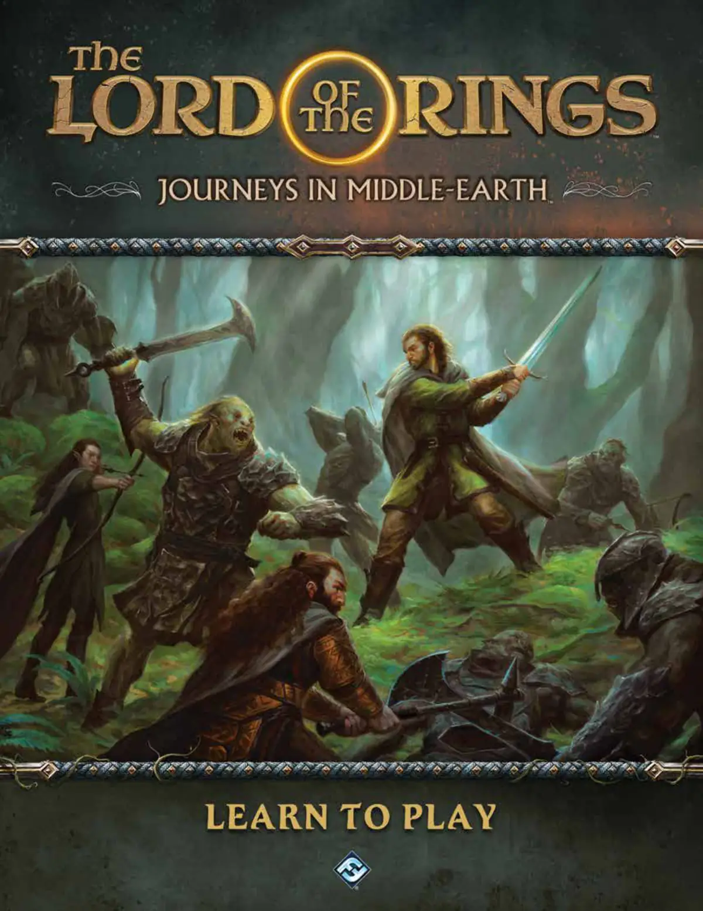
<figcaption>原版规则书 · 第 1 页（点击图片放大）</figcaption>
</figure>


<figure>
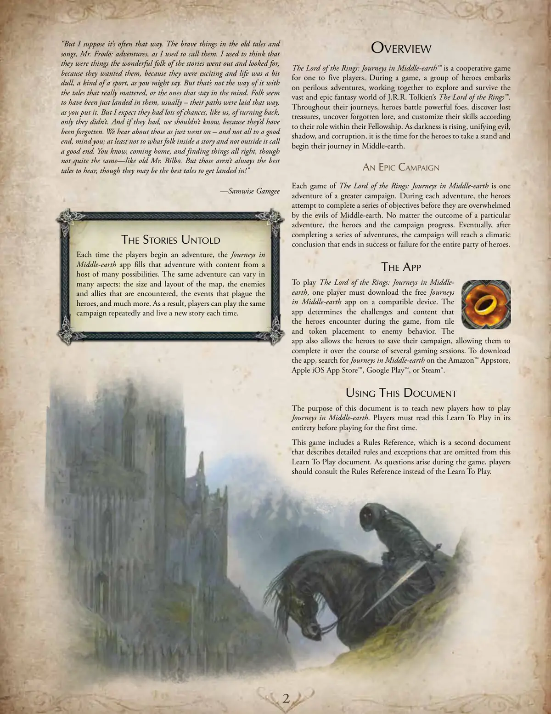
<figcaption>原版规则书 · 第 2 页（点击图片放大）</figcaption>
</figure>

<details class="mt-fold">
<summary>📝 第 2 页 AI 机翻对照（点击展开）</summary>
<div class="mt-body"><p>"但我想事情往往就是这样。那些古老故事和歌曲里的勇敢事迹，弗罗多先生：冒险，我过去常这么叫它们。我曾以为，是故事里那些奇妙的人物走出去寻找它们，因为他们想要，因为它们令人兴奋，而生活有点乏味，可以说是一种运动。但对于那些真正重要的故事，或是那些留在记忆中的故事来说，情况并非如此。人们似乎只是偶然卷入其中——他们的道路就是这样铺就的，正如你所说的。但我猜他们和我们一样有很多机会回头，只是他们没有。如果他们回头了，我们就不会知道，因为他们会被遗忘。我们听到的只是那些继续前行的人的故事——而且并非都有好结局，请注意；至少不是故事里的人和故事外的人所说的那种好结局。你知道，回到家，发现一切安好，尽管不完全一样——就像老比尔博先生那样。但这些不总是最好听的故事，尽管它们可能是最好卷入其中的故事！"</p>

<p>——山姆怀斯·甘吉</p>

<p>未述说的故事</p>

<p>每当玩家开始一次冒险时，《中土世界之旅》应用会用众多可能性中的内容来填充那次冒险。同一次冒险在许多方面都可能有所不同：地图的大小和布局，遭遇的敌人和盟友，困扰英雄们的事件，等等。因此，玩家可以重复进行同一个战役，每次都体验一个新故事。</p>

<p>概览</p>

<p>《魔戒：中土世界之旅™》是一款供一到五名玩家游玩的合作游戏。在游戏中，一群英雄踏上危险的冒险之旅，共同努力探索并托尔金《魔戒™》史诗奇幻世界中生存下来。在他们的旅途中，英雄们与强大的敌人战斗，发现失落的宝藏，揭开被遗忘的传说，并根据他们在同伴中的角色定制自己的技能。随着黑暗崛起，邪恶、阴影和腐败逐渐统一，正是英雄们挺身而出、开始他们在中土世界之旅的时候。</p>

<p>史诗战役</p>

<p>每一次《魔戒：中土世界之旅》的游戏都是一场更大战役的一次冒险。在每次冒险中，英雄们试图在中土世界的邪恶将他们压垮之前完成一系列目标。无论某次冒险的结果如何，英雄和战役都会继续推进。最终，在完成一系列冒险后，战役将达到一个高潮结局，为整个英雄团队带来成功或失败。</p>

<p>应用</p>

<p>要游玩《魔戒：中土世界之旅》，必须有一名玩家在兼容设备上下载免费的《中土世界之旅》应用。</p>

<p>应用决定了英雄们在游戏中遇到的挑战和内容，从板块和指示物的放置到敌人的行为。该应用还允许英雄们保存他们的战役，使他们能够在多次游戏会话中完成它。要下载该应用，请在亚马逊™应用商店、苹果iOS应用商店™、谷歌Play™或Steam®上搜索"Middle-earth之旅"（Journeys in Middle-earth）。</p>

<p>使用本文档</p>

<p>本文档的目的是教导新玩家如何玩"Middle-earth之旅"（Journeys in Middle-earth）。玩家在第一次游戏前必须完整阅读本"入门指南"（Learn To Play）。</p>

<p>本游戏包含一份"规则参考"（Rules Reference），这是第二份文档，描述了本"入门指南"中省略的详细规则和例外情况。游戏过程中出现问题时，玩家应查阅"规则参考"而非"入门指南"。</p></div>
</details>

<figure>
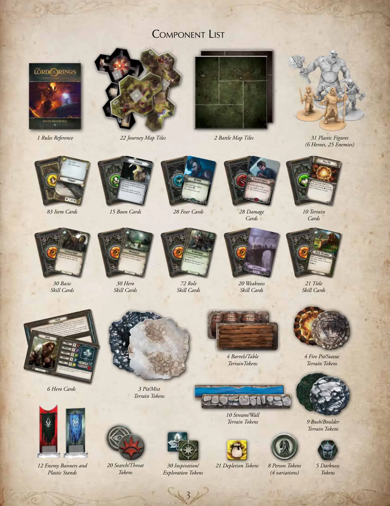
<figcaption>原版规则书 · 第 3 页（点击图片放大）</figcaption>
</figure>

<details class="mt-fold">
<summary>📝 第 3 页 AI 机翻对照（点击展开）</summary>
<div class="mt-body"><p>吉姆利</p>

<h2>建议起始</h2>

<p>角色："守护者"</p>

<p>物品："战斧"和"环甲"</p>

<h2>背景</h2>

<p>吉姆利，格洛因之子，不朽都林的后裔，长期以来一直渴望逃离他在埃瑞德隆的流放家园，去往远方冒险。当格洛因加入一支向东行进、旨在夺回山下失王国的队伍时，吉姆利无法与他们同行。然而，如今已到 respectable 的年纪，吉姆利准备将他的凶猛和专业技能施展于敌人身上。</p>

<p>如同任何矮人一样，内心燃烧着对栖息于地下黑暗中的邪恶兽人进行复仇的激情。然而，如今无需深入地下就能找到它们，因此吉姆利焦躁不安地等待着，等待第一个从日益增长的黑暗中拯救出来或与之开战的召唤。</p>

<p>力量</p>

<p>智慧</p>

<p>敏捷</p>

<p>精神</p>

<p>机智</p>

<p>伤害</p>

<p>恐惧</p>

<p>在你攻击后，你可以将测试中的1张牌置于你的牌库顶。</p>

<p>矮人</p>

<p>吉姆利</p>

<p>诅咒伤害</p>

<p>保持此牌面朝上。</p>

<p>如果你需要弃置一张面朝上的，则将其翻面朝下。</p>

<p>TM Lic. SZC to FFG</p>

<p>25 </p>

<p></p>

<p>匕首</p>

<p>1：2次打击</p>

<p>2：3次打击，穿透</p>

<p>TM Lic. SZC to FFG</p>

<p>隐藏</p>

<p>如果你受到攻击，在你测试前，防止所有并弃置此增益。</p>

<p>当你攻击时，你可以弃置此增益来增加1。</p>

<p>其他每位英雄受到1张面朝下的。</p>

<p>然后弃置此牌。</p>

<p>恶意</p>

<p>TM Lic. SZC to FFG</p>

<p>基础 1</p>

<p>当你测试时，你可以弃置此技能来增加1。</p>

<p>不死之力</p>

<p>TM Lic. SZC to FFG</p>

<p>称号 3</p>

<p>在你使用此技能打击后，将其从冒险中移除。</p>

<p>打击 3</p>

<p>穴居者</p>

<p>TM Lic. SZC to FFG</p>

<p>弱点</p>

<p>偏离路线</p>

<p>TM Lic. SZC to FFG</p>

<p>如果你在有火坑的区域攻击，你可以从测试中弃置一张带有的牌来增加穿透或重击。</p>

<p>火坑</p>

<p>TM Lic. SZC to FFG</p>

<p>探险家 1</p>

<p>在你冲刺前，获得1点灵感。</p>

<p>冲刺 1（在你的回合，弃置以移动1个区域。）</p>

<p>开路先锋</p>

<p>TM Lic. SZC to FFG</p>

<p>阿拉贡 1</p>

<p>在你探索一个板块后，你或附近的英雄可以侦察1个。</p>

<p>漫游者</p>

<p>TM Lic. SZC to FFG</p>

<p>组件列表</p>

<p>6张英雄卡</p>

<p>28张伤害牌</p>

<p>83张物品牌</p>

<p>15张增益牌</p>

<p>28张恐惧牌</p>

<p>30张基础技能牌</p>

<p>21张称号技能牌</p>

<p>20张弱点技能牌</p>

<p>4个桶/桌地形指示物</p>

<p>22张旅程地图板块</p>

<p>2张战斗地图板块</p>

<p>1张规则参考</p>

<p>31个塑料小雕像（6个英雄，25个敌人）</p>

<p>10个溪流/墙地形指示物</p>

<p>10张地形牌</p>

<p>72张角色技能牌</p>

<p>30张英雄技能牌</p>

<p>30张灵感/探索指示物</p>

<p>21张耗尽指示物</p>

<p>5张黑暗指示物</p>

<p>8张人物指示物（4个变体）</p>

<p>20张搜索/威胁指示物</p>

<p>4个火坑/雕像地形指示物</p>

<p>9个灌木/巨石地形指示物</p>

<p>3个坑/雾地形指示物</p>

<p>12张敌人旗帜和塑料底座</p></div>
</details>

<figure>
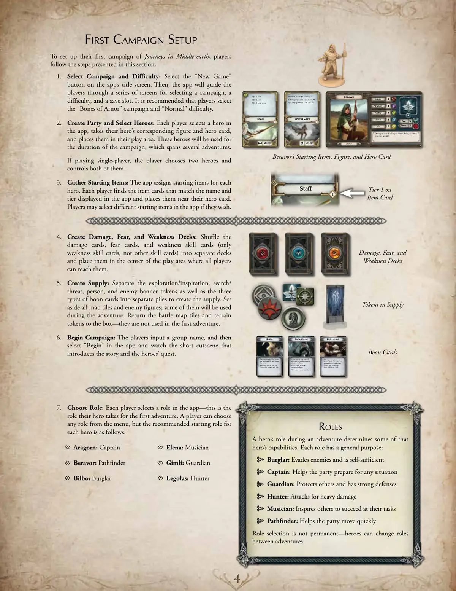
<figcaption>原版规则书 · 第 4 页（点击图片放大）</figcaption>
</figure>

<details class="mt-fold">
<summary>📝 第 4 页 AI 机翻对照（点击展开）</summary>
<div class="mt-body"><p>隐藏</p>

<p>如果你受到攻击，在检定前，防止所有并弃掉这个恩赐。</p>

<p>当你攻击时，你可以弃掉这个恩赐来增加1。</p>

<p>在你的回合结束时，如果没有附近的敌人，弃掉这个恩赐。</p>

<p>如果你受到或，弃掉这个恩赐。</p>

<p>当你攻击时，增加2次命中。</p>

<p>勇敢</p>

<p>当你检定时，你可以弃掉这个恩赐来检定时弃掉任意数量的卡牌并揭示同样数量的额外卡牌。</p>

<p>坚定</p>

<p>力量</p>

<p>智慧</p>

<p>敏捷</p>

<p>精神</p>

<p>机智</p>

<p>伤害</p>

<p>恐惧</p>

<p>每轮一次，在你冲刺、隐藏或攻击后，你可以侦查1。</p>

<p>人类</p>

<p>贝拉沃尔</p>

<p>法杖</p>

<p>1：2次命中</p>

<p>1：2次命中</p>

<p>2：3次命中，眩晕</p>

<p>28 </p>

<p>TM 授权 SZC 给 FFG</p>

<p></p>

<p>24 </p>

<p>旅行装束</p>

<p>将你的上限增加1。</p>

<p>在你承受面朝下的之前，你可以防止其中的1点。</p>

<p>TM 授权 SZC 给 FFG</p>

<p>法杖</p>

<p>ZC 给 FFG</p>

<p>第一个战役设置</p>

<p>为了设置他们在中土世界之旅的第一个战役，玩家遵循本节中介绍的步骤。</p>

<ol>
  <li>选择战役和难度：在应用的标题屏幕上选择"新游戏"按钮。然后，应用将引导玩家通过一系列屏幕来选择战役、难度和存档槽位。建议玩家选择"阿诺尔之骨"战役和"普通"难度。</li>
</ol>

<h3>2. 创建队伍并选择英雄：每个玩家在应用中选择一个英雄，拿取他们英雄的对应模型和英雄卡，并将它们放置在自己的游戏区域。这些英雄将在整个战役期间使用，战役跨越多个冒险。如果是单人游戏，玩家选择两个英雄并控制两者。</h3>

<h3>3. 收集起始物品：应用为每个英雄分配起始物品。每个玩家找到与应用中显示的名称和等级相匹配的物品卡，并将它们放在英雄卡附近。如果玩家愿意，可以在应用中选择不同的起始物品。</h3>

<h3>4. 创建伤害、恐惧和弱点牌库：将伤害卡、恐惧卡和弱点技能卡（仅弱点技能卡，不包括其他技能卡）分别洗牌成牌库，并将它们放置在游戏区域的中央，所有玩家都能触及的地方。</h3>

<h3>5. 创建补给：将探索/灵感、搜索/威胁、人物和敌人旗帜标记以及三种类型的恩赐卡分别堆成小堆来创建补给。将所有地图板块和敌人模型放在一边；其中一些将在冒险期间使用。将战斗地图板块和地形标记放回盒中——它们在第一个冒险中不使用。</h3>

<h3>6. 开始战役：玩家输入一个队伍名称，然后在应用中选择"开始"并观看简短的过场动画，介绍故事和英雄的使命。</h3>

<ol>
  <li>选择角色：每个玩家在应用中选择一个角色——这是他们的英雄在第一个冒险中扮演的角色。玩家可以</li>
</ol>

<p>可以从菜单中选择任意角色，但每位英雄的推荐起始角色如下：</p>

<p>Aragorn: Captain（队长）</p>

<p>Beravor: Pathfinder（探路者）</p>

<p>Bilbo: Burglar（盗贼）</p>

<p>Elena: Musician（音乐家）</p>

<p>Gimli: Guardian（守护者）</p>

<p>Legolas: Hunter（猎人）</p>

<p>Beravor的起始物品、角色模型和英雄卡</p>

<p>伤害牌库、恐惧牌库和弱点牌库</p>

<p>供应中的指示物</p>

<p>恩惠卡牌</p>

<p>角色</p>

<p>英雄在冒险中的角色决定了该英雄的一些能力。每个角色都有一个总体目的：</p>

<p>Burglar（盗贼）：躲避敌人且能自给自足</p>

<p>Captain（队长）：帮助队伍为任何情况做准备</p>

<p>Guardian（守护者）：保护他人并拥有强大的防御能力</p>

<p>Hunter（猎人）：造成高额伤害</p>

<p>Musician（音乐家）：激励他人完成任务</p>

<p>Pathfinder（探路者）：帮助队伍快速移动</p>

<p>角色选择不是永久性的—英雄可以在冒险之间更换角色。</p>

<p>物品卡上的第1级</p></div>
</details>

<figure>
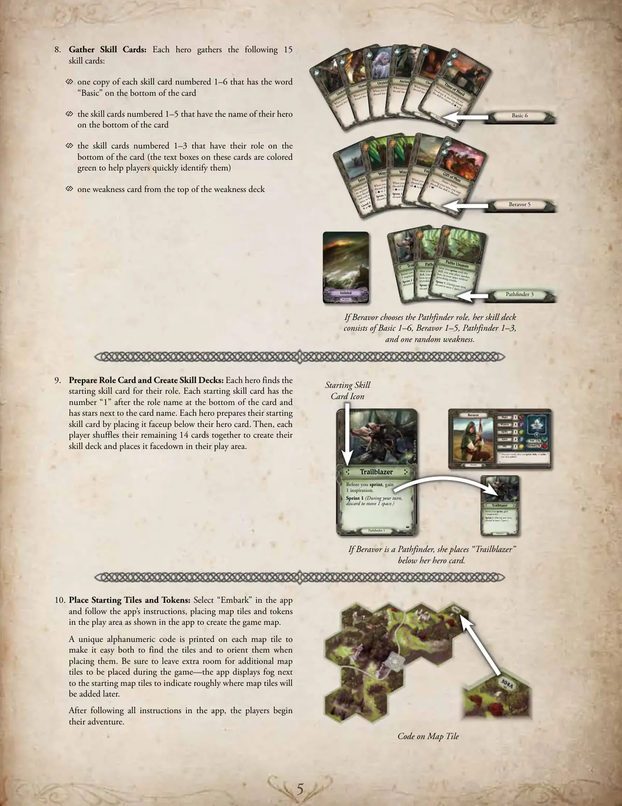
<figcaption>原版规则书 · 第 5 页（点击图片放大）</figcaption>
</figure>

<details class="mt-fold">
<summary>📝 第 5 页 AI 机翻对照（点击展开）</summary>
<div class="mt-body"><p>贝拉沃 1</p>

<p>在你的回合中，如果你的区域内没有敌人，你可以弃掉这项技能，你和你的区域内的其他每位英雄都可以变为隐藏状态。</p>

<p>守卫 2（弃掉以保护你区域内的某位英雄免受 2 点  或  伤害。）</p>

<p>隐匿</p>

<p>TM 授权 SZC 给 FFG</p>

<p>贝拉沃 2</p>

<p>战术 • 知识</p>

<p>当你进行检定时，你可以弃掉这项技能，将 1 个  转换为 1 个  并侦查 1。</p>

<p>疾跑 1（在你的回合中，弃掉以移动 1 个区域。）</p>

<p>古老之道</p>

<p>TM 授权 SZC 给 FFG</p>

<p>贝拉沃 3</p>

<p>战术 • 知识</p>

<p>当你进行检定时，你可以弃掉这项技能，将 1 个  转换为 1 个  并侦查 1。</p>

<p>疾跑 1（在你的回合中，弃掉以移动 1 个区域。）</p>

<p>古老之道</p>

<p>TM 授权 SZC 给 FFG</p>

<p>贝拉沃 4</p>

<p>固有</p>

<p>当你进行检定时，你可以弃掉这项技能，将所有  转换为 。</p>

<p>无命运</p>

<p>TM 授权 SZC 给 FFG</p>

<p>贝拉沃 5</p>

<p>固有 • 勇气</p>

<p>在你的回合中，你可以弃掉这项技能，弃掉 1 个 。</p>

<p>人类的礼物</p>

<p>TM 授权 SZC 给 FFG</p>

<p>基础 6</p>

<p>贝拉沃 5</p>

<p>探路者 3</p>

<p>基础 1</p>

<p>当你检定  时，你可以弃掉这项技能，添加 1 个 。</p>

<p>不屈之力</p>

<p>TM 授权 SZC 给 FFG</p>

<p>基础 2</p>

<p>当你检定  时，你可以弃掉这项技能，添加 1 个 。</p>

<p>磨砺的敏捷</p>

<p>TM 授权 SZC 给 FFG</p>

<p>基础 3</p>

<p>当你检定  时，你可以弃掉这项技能，添加 1 个 。</p>

<p>不屈的精神</p>

<p>TM 授权 SZC 给 FFG</p>

<p>基础 4</p>

<p>当你检定  时，你可以弃掉这项技能，添加 1 个 。</p>

<p>古老的智慧</p>

<p>TM 授权 SZC 给 FFG</p>

<p>基础 5</p>

<p>当你检定  时，你可以弃掉这项技能，添加 1 个 。</p>

<p>机智的才智</p>

<p>TM 授权 SZC 给 FFG</p>

<p>基础 6</p>

<p>当你检定时，如果你没有揭示任何 ，你可以弃掉这项技能，将所有  转换为 。</p>

<p>危急时刻</p>

<p>TM 授权 SZC 给 FFG</p>

<p>探路者 1</p>

<p>在你疾跑前，获得 1 点灵感。</p>

<p>疾跑 1（在你的回合中，弃掉以移动 1 个区域。）</p>

<p>开拓者</p>

<p>TM 授权 SZC 给 FFG</p>

<p>探路者 2</p>

<p>在你使用这项技能疾跑后，你可以将另一位英雄放置在你的区域内而不引发攻击。</p>

<p>疾跑 1（在你的回合中，弃掉以移动 1 个区域。）</p>

<p>未见的道路</p>

<p>TM 授权 SZC 给 FFG</p>

<p>探路者 3</p>

<p>在你使用这项技能疾跑后，你可以将另一位英雄放置在你的区域内而不引发攻击。</p>

<p>疾跑 1（在你的回合中，弃掉以移动 1 个区域。）</p>

<p>未见的道路</p>

<p>TM 授权 SZC 给 FFG</p>

<p>弱点</p>

<p>孤立</p>

<p>TM 授权 SZC 给 FFG</p>

<p>力量</p>

<p>智慧</p>

<p>敏捷</p>

<p>精神</p>

<p>才智</p>

<p>伤害</p>

<p>恐惧</p>

<p>每轮一次，在你疾跑、隐匿或攻击后，你可以侦查 1。</p>

<p>人类</p>

<p>贝拉沃</p>

<p>探路者 1</p>

<p>在你疾跑前，获得 1 点灵感。</p>

<p>疾跑 1（在你的回合中，弃掉以移动 1 个区域。）</p>

<p>开拓者</p>

<p>TM 授权 SZC 给 FFG</p>

<p>探路者 1</p>

<p>在你疾跑前，获得 1 点灵感。</p>

<p>疾跑 1（在你的回合中，弃掉以移动 1 个区域。）</p>

<p>开拓者</p>

<p>TM 授权 SZC 给 FFG</p>

<ol>
  <li>收集技能卡：每位英雄收集以下 15 张技能卡：</li>
</ol>

<p>• 每张底部标有"基础"字样且编号为 1-6 的技能卡各一张</p>

<p>• 底部有其英雄名称的编号为 1-5 的技能卡</p>

<p>编号为1-3的技能卡，其角色名位于卡牌底部（这些卡牌上的文本框为绿色，以帮助玩家快速识别它们）</p>

<p>从弱点牌库顶部抽取一张弱点牌</p>

<h3>9. 准备角色牌并创建技能牌堆：每位英雄找到其角色的起始技能卡。每张起始技能卡在卡牌底部的角色名后标有数字"1"，并且在卡牌名称旁边有星标。每位英雄将其起始技能牌面朝上放置在其英雄牌下方。然后，每位玩家将其余的14张牌洗混，创建自己的技能牌堆，并将其面朝下放置在自己的游戏区域。</h3>

<ol>
  <li>放置起始板块和指示物：在应用中选择"启程"并遵循应用说明，按照应用所示在游戏区域放置地图板块和指示物，创建游戏地图。</li>
</ol>

<p>每个地图板块上都印有唯一的字母数字代码，以便于查找板块和在放置时确定方向。请务必为游戏期间要额外放置的地图板块留出额外空间——应用在起始地图板块旁边显示迷雾，指示大致后续会添加地图板块的位置。</p>

<p>遵循应用中的所有说明后，玩家们开始他们的冒险。</p>

<p>如果Beravor选择探路者角色，她的技能牌堆包括基础1-6、Beravor 1-5、探路者1-3和一张随机弱点牌。</p>

<p>地图板块代码</p>

<p>起始技能卡图标</p>

<p>如果Beravor是探路者，她将"开拓者"放置在其英雄牌下方。</p></div>
</details>

<figure>
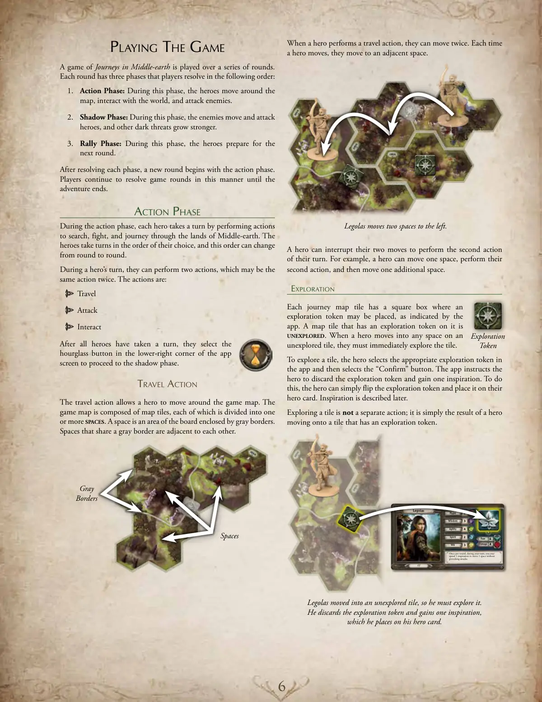
<figcaption>原版规则书 · 第 6 页（点击图片放大）</figcaption>
</figure>

<details class="mt-fold">
<summary>📝 第 6 页 AI 机翻对照（点击展开）</summary>
<div class="mt-body"><p>游戏进行</p>

<p>中土世界之旅的游戏通过一系列回合进行。</p>

<p>每个回合有三个阶段，玩家按以下顺序解决这些阶段：</p>

<h3>1. 行动阶段：在此阶段，英雄们在地图上移动，与世界互动，并攻击敌人。</h3>

<h3>2. 影阶段：在此阶段，敌人移动并攻击英雄，其他黑暗威胁也变得更加强大。</h3>

<h3>3. 集结阶段：在此阶段，英雄们为下一回合做准备。</h3>

<p>解决每个阶段后，一个新的回合从行动阶段开始。</p>

<p>玩家以这种方式继续解决游戏回合，直到冒险结束。</p>

<p>行动阶段</p>

<p>在行动阶段，每位英雄通过执行行动来搜索、战斗并穿越中土世界的土地，轮流行动。英雄们按自己选择的顺序轮流行动，这个顺序在每回合之间可以改变。</p>

<p>在英雄的回合中，他们可以执行两个行动，可以是同一个行动执行两次。这些行动是：</p>

<p></p>

<p> 旅行</p>

<p></p>

<p> 攻击</p>

<p></p>

<p> 互动</p>

<p>所有英雄都行动完毕后，他们在应用屏幕右下角选择沙漏按钮，进入影阶段。</p>

<p>旅行行动</p>

<p>旅行行动允许英雄在游戏地图上移动。游戏地图由地图板块组成，每个板块被划分为一个或多个区域。区域是由灰色边框包围的版图上的一个区域。共享灰色边框的区域彼此相邻。</p>

<p>区域</p>

<p>灰色边框</p>

<p>当英雄执行旅行行动时，他们可以移动两次。每次英雄移动时，他们移动到一个相邻的区域。</p>

<p>英雄可以中断两次移动来执行他们回合的第二个行动。例如，英雄可以移动一个区域，执行他们的第二个行动，然后再移动一个额外的区域。</p>

<p>探索</p>

<p>每个旅程地图板块都有一个方框，根据应用的指示，可以在其中放置一个探索标记。有探索标记的地图板块是未探索的。当英雄移动到未探索板块上的任何区域时，他们必须立即探索该板块。</p>

<p>要探索一个板块，英雄在应用中选择相应的探索标记，然后选择"确认"按钮。应用指示英雄弃掉探索标记并获得一个灵感。为此，英雄只需翻转探索标记并将其放在他们的英雄卡上。灵感将在后面描述。</p>

<p>探索板块不是单独的行动；它只是英雄移动到有探索标记的板块上的结果。</p>

<p>勒苟拉斯向左移动两个区域。</p>

<p>探索标记</p>

<p>勒苟拉斯移动到了一个未探索的板块，所以他必须探索它。</p>

<p>他弃掉探索标记并获得一个灵感，他将这个灵感放在他的英雄卡上。</p>

<p>力量</p>

<p>智慧</p>

<p>敏捷</p>

<p>精神</p>

<p>机智</p>

<p>伤害</p>

<p>恐惧</p>

<p>每轮一次，在你的回合期间，你可以</p>

<p>花费 1 点灵感来移动 1 格而不</p>

<p>引发攻击。</p>

<p>精灵</p>

<p>莱戈拉斯</p></div>
</details>

<figure>
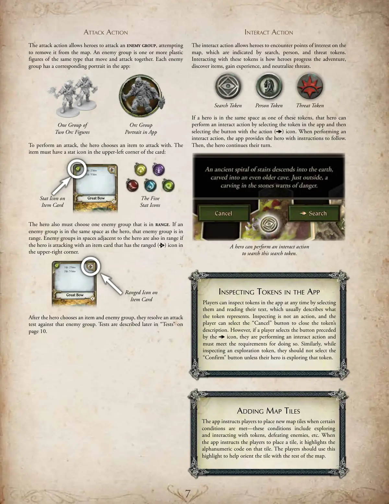
<figcaption>原版规则书 · 第 7 页（点击图片放大）</figcaption>
</figure>

<details class="mt-fold">
<summary>📝 第 7 页 AI 机翻对照（点击展开）</summary>
<div class="mt-body"><p>攻击行动</p>

<p>攻击行动允许英雄攻击敌群，试图将其从版图上移除。敌群是指一起移动和攻击的一个或多个相同类型的塑料小雕像。每个敌群在应用中都有对应的肖像：</p>

<p>要进行攻击，英雄需选择一件攻击用的物品。该物品必须在卡牌左上角有一个属性图标：</p>

<p>英雄还必须选择一个在射程内的敌群。如果一个敌群与英雄在同一格，则该敌群在射程内。如果英雄使用右上角有远程（）图标的物品卡攻击，则与英雄相邻格中的敌群也在射程内。</p>

<p>英雄选择物品和敌群后，需对该敌群进行一次攻击检定。检定将在第10页的"检定"部分后文描述。</p>

<p>兽人群</p>

<p>应用中的肖像</p>

<p>一个包含两个兽人小雕像的群组</p>

<p>五个属性图标</p>

<p>长弓</p>

<p>1: 2次命中</p>

<p>2: 5次命中</p>

<p>SZC 授权给 FFG</p>

<p>物品卡上的属性图标</p>

<p>长弓</p>

<p>1: 2次命中</p>

<p>2: 5次命中</p>

<p>SZC 授权给 FFG</p>

<p>物品卡上的远程图标</p>

<p>互动行动</p>

<p>互动行动允许英雄 encounter 地图上的兴趣点，这些点由搜索、人物和威胁指示物表示。与这些指示物互动是英雄推进冒险、发现物品、获得经验和中立威胁的方式。</p>

<p>如果英雄与其中一个指示物在同一格，该英雄可以通过在应用中选择该指示物，然后选择带有行动（）图标的按钮来执行互动行动。执行互动行动时，应用会提供给英雄需要遵循的说明。然后，英雄继续他们的回合。</p>

<p>搜索指示物</p>

<p>人物指示物</p>

<p>威胁指示物</p>

<p>英雄可以执行互动行动来搜索这个搜索指示物。</p>

<p>在应用中检查指示物</p>

<p>玩家可以通过随时选择指示物并阅读其文本来检查指示物，文本通常描述该指示物代表什么。检查不是一种行动，玩家可以选择"取消"按钮关闭指示物的描述。但是，如果玩家选择带有图标的按钮前的按钮，他们就是在执行互动行动，必须满足相应要求。同样，在检查探索指示物时，除非他们的英雄正在探索该指示物，否则不应选择"确认"按钮。</p>

<p>添加板块</p>

<p>应用会在满足特定条件时指示玩家放置新板块——这些条件包括探索和与指示物互动、击败敌人等。当应用指示玩家放置板块时，它会突出显示该板块上的字母数字代码。玩家应使用这个突出显示来帮助将板块与地图其余部分对齐。</p></div>
</details>

<figure>
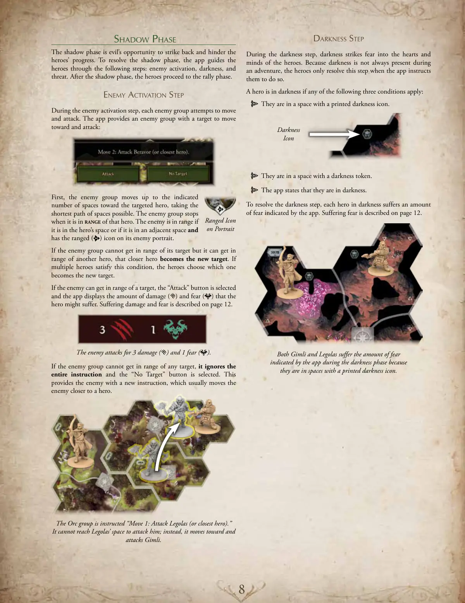
<figcaption>原版规则书 · 第 8 页（点击图片放大）</figcaption>
</figure>

<details class="mt-fold">
<summary>📝 第 8 页 AI 机翻对照（点击展开）</summary>
<div class="mt-body"><p>暗影阶段</p>

<p>暗影阶段是邪恶势力反击并阻碍英雄们前进的机会。要解决暗影阶段，应用会引导英雄们完成以下步骤：敌人激活、黑暗和威胁。暗影阶段结束后，英雄们进入集结阶段。</p>

<p>敌人激活步骤</p>

<p>在敌人激活步骤中，每个敌群尝试移动和攻击。应用会为敌群提供一个目标英雄，使其向该目标移动和攻击：</p>

<p>首先，敌群向目标英雄移动最多指定的格数，走尽可能短的路径。当敌群进入该英雄的范围内时停止。如果敌群位于英雄所在的格，或者位于相邻格且其敌人肖像上有远程（）图标，则敌人在范围内。</p>

<p>如果敌群无法进入其目标的范围内，但可以进入另一个英雄的范围内，则那个更近的英雄成为新目标。如果有多个英雄满足此条件，则英雄们选择谁成为新目标。</p>

<p>如果敌人可以进入目标的范围内，则选择"攻击"按钮，应用会显示英雄可能遭受的伤害（）和恐惧（）数量。遭受伤害和恐惧的内容在第12页描述。</p>

<p>如果敌群无法进入任何目标的范围内，则忽略整个指令，选择"无目标"按钮。这会给敌人提供一条新指令，通常会将敌人移向更靠近英雄的位置。</p>

<p>肖像上的</p>

<p>远程图标</p>

<p>敌人造成3点伤害（）和1点恐惧（）。</p>

<p>兽人群被指示"移动1：攻击勒苟拉斯（或最近的英雄）。"</p>

<p>它无法到达勒苟拉斯的格来攻击他；相反，它向并攻击金雳。</p>

<p>黑暗步骤</p>

<p>在黑暗步骤中，黑暗在英雄的心智中注入恐惧。由于黑暗在冒险中并非始终存在，英雄们只在应用指示他们这样做时才执行此步骤。</p>

<p>如果满足以下三个条件之一，英雄就处于黑暗中：</p>

<p></p>

<p> 他们位于有印刷黑暗图标的格中。</p>

<p></p>

<p> 他们位于有黑暗指示物的格中。</p>

<p></p>

<p> 应用声明他们处于黑暗中。</p>

<p>要解决黑暗步骤，每个处于黑暗中的英雄遭受应用指示的恐惧数量。遭受恐惧的内容在第12页描述。</p>

<p>黑暗</p>

<p>图标</p>

<p>金雳和勒苟拉斯在黑暗阶段都遭受应用指示的恐惧数量，因为他们位于有印刷黑暗图标的格中。</p></div>
</details>

<figure>
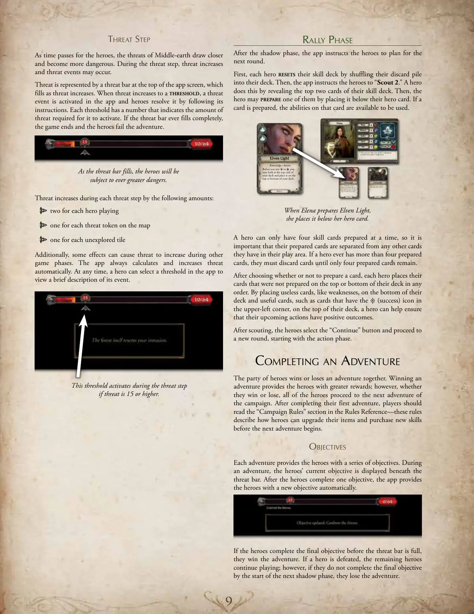
<figcaption>原版规则书 · 第 9 页（点击图片放大）</figcaption>
</figure>

<details class="mt-fold">
<summary>📝 第 9 页 AI 机翻对照（点击展开）</summary>
<div class="mt-body"><p>威胁阶段</p>

<p>随着英雄们的时间流逝，中土世界的威胁也越来越近，变得更加危险。在威胁阶段，威胁值会增加，并且可能发生威胁事件。</p>

<p>威胁通过应用屏幕顶部的威胁条表示，随着威胁值的增加而填充。当威胁值增加到某个阈值时，应用中会激活一个威胁事件，英雄们通过遵循其说明来解决它。每个阈值都有一个数字，表示激活它所需的威胁值数量。如果威胁条完全填满，游戏结束，英雄们冒险失败。</p>

<p>在每个威胁阶段，威胁值按以下数量增加：</p>

<p></p>

<p> 每位游玩的英雄增加2点</p>

<p></p>

<p> 地图上的每个威胁指示物增加1点</p>

<p></p>

<p> 每个未探索的板块增加1点</p>

<p>此外，一些效果可能会导致在其他游戏阶段增加威胁。应用总是自动计算并增加威胁值。任何时候，英雄都可以在应用中选择一个阈值来查看其事件的简要描述。</p>

<p>随着威胁条的填充，英雄们将面临越来越大的危险。</p>

<p>如果威胁值达到15或更高，此阈值在威胁阶段激活。</p>

<p>集结阶段</p>

<p>在暗影阶段之后，应用会指示英雄们为下一轮做准备。</p>

<p>首先，每位英雄通过将他们的弃牌堆洗入牌库来重置他们的技能牌库。然后，应用会指示英雄们"侦察2"。英雄通过揭示其技能牌库顶部的两张牌来完成此操作。然后，英雄可以将其中一张牌放置在其英雄牌下方来准备它。如果一张牌被准备，该牌上的能力就可以被使用。</p>

<p>一位英雄一次只能准备四张技能牌，因此将准备好的牌与他们在游戏区域中的其他牌分开存放非常重要。如果英雄拥有的准备好的牌超过四张，他们必须弃牌直到只剩下四张准备好的牌。</p>

<p>在决定是否准备一张牌后，每位英雄可以将未准备的牌以任意顺序放置到他们的牌库顶部或底部。通过将无用的牌（如弱点）放在牌库底部，将有用的牌（如左上角有（成功）图标的牌）放在牌库顶部，英雄可以帮助确保他们即将进行的行动有积极的结果。</p>

<p>侦察结束后，英雄们选择"继续"按钮，进入新的轮次，从行动阶段开始。</p>

<p>完成冒险</p>

<p>英雄团队一起赢得或输掉一场冒险。赢得冒险为英雄们提供更大的奖励；然而，无论他们赢还是输，所有英雄都会继续进行战役的下一场冒险。完成第一场冒险后，玩家应阅读规则参考中的"战役规则"部分——这些规则</p>

<p>描述英雄如何在下一次冒险开始前升级他们的物品和购买新技能。</p>

<p>目标</p>

<p>每次冒险都会为英雄提供一系列目标。在冒险期间，英雄的当前目标会显示在威胁条下方。当英雄完成一个目标后，应用会自动为英雄提供新目标。</p>

<p>如果英雄在威胁条满之前完成最终目标，他们就赢得了冒险。如果一名英雄被击败，其余英雄继续游戏；然而，如果他们在下一个暗影阶段开始时没有完成最终目标，他们就输掉了冒险。</p>

<p>力量</p>

<p>智慧</p>

<p>敏捷</p>

<p>精神</p>

<p>机智</p>

<p>伤害</p>

<p>恐惧</p>

<p>精灵</p>

<p>艾琳娜</p>

<p>每项测试一次，在你花费1点灵感后，一名附近英雄获得1点灵感。</p>

<p>艾琳娜 2</p>

<p>知识 • 天赋</p>

<p>在你测试或之前，你可以查看你牌库顶部的牌并将其置于你牌库的顶部或底部。</p>

<p>精灵之光</p>

<p>TM 授权 SZC 给 FFG</p>

<p>基础 1</p>

<p>当你测试时，你可以弃掉此技能来添加1个。</p>

<p>不屈的力量</p>

<p>TM 授权 SZC 给 FFG</p>

<p>艾琳娜 2</p>

<p>知识 • 天赋</p>

<p>在你测试或之前，你可以查看你牌库顶部的牌并将其置于你牌库的顶部或底部。</p>

<p>精灵之光</p>

<p>TM 授权 SZC 给 FFG</p>

<p>当艾琳娜准备精灵之光时，她将其置于她的英雄卡下方。</p></div>
</details>

<figure>
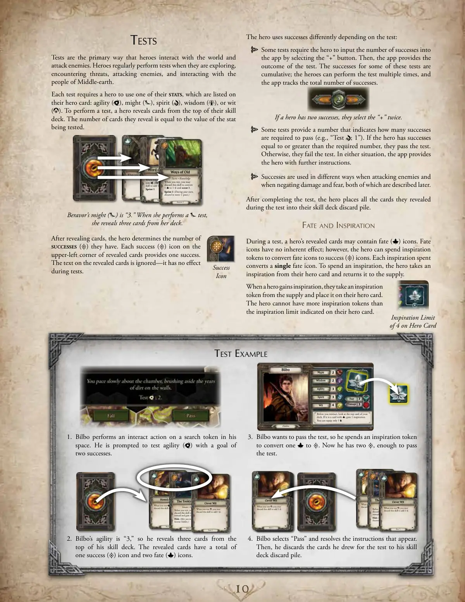
<figcaption>原版规则书 · 第 10 页（点击图片放大）</figcaption>
</figure>

<details class="mt-fold">
<summary>📝 第 10 页 AI 机翻对照（点击展开）</summary>
<div class="mt-body"><p>测试示例</p>

<h3>1. 比尔博在他所在的空间对一个搜索指示物执行互动行动。他被提示进行敏捷（）测试，目标是获得两次成功。</h3>

<ol>
  <li>比尔博想要通过测试，所以他花费一个灵感指示物将一个转换为。现在他有两个，足以通过测试。</li>
  <li>比尔博的敏捷是"3"，所以他从他的技能牌库顶部分三张牌。揭示的牌总共有一个成功（）图标和两个命运（）图标。</li>
  <li>比尔博选择"通过"并解析出现的说明。然后，他将为测试抽取的牌弃置到他的技能牌库弃牌堆。</li>
</ol>

<p>力量</p>

<p>智慧</p>

<p>敏捷</p>

<p>精神</p>

<p>机智</p>

<p>伤害</p>

<p>恐惧</p>

<p>在互动前，查看你牌库顶部的牌。如果它是一张带有的牌，获得1点灵感。</p>

<p>你只能装备1个。</p>

<p>霍比特人</p>

<p>比尔博</p>

<p>基础 2</p>

<p>当你测试时，你可以弃置此技能来增加1个。</p>

<p>精湛敏捷</p>

<p>TM Lic. SZC to FFG</p>

<p>比尔博 1</p>

<p>固有 • 勇气</p>

<p>在测试前，你可以弃置此技能来改为测试，并获得1点灵感。</p>

<p>隐藏（测试后，弃置变为隐藏。）</p>

<p>图克血统</p>

<p>TM Lic. SZC to FFG</p>

<p>基础 5</p>

<p>当你测试时，你可以弃置此技能来增加1个。</p>

<p>机智聪慧</p>

<p>TM Lic. SZC to FFG</p>

<p>比尔博 1</p>

<p>固有 • 勇气</p>

<p>在测试前，你可以弃置此技能来改为测试，并获得1点灵感。</p>

<p>隐藏（测试后，弃置变为隐藏。）</p>

<p>图克血统</p>

<p>TM Lic. SZC to FFG</p>

<p>基础 5</p>

<p>当你测试时，你可以弃置此技能来增加1个。</p>

<p>机智聪慧</p>

<p>TM Lic. SZC to FFG</p>

<p>阿拉贡 1</p>

<p>在你探索一个板块后，你或附近的英雄可以侦查1个。</p>

<p>漫游者</p>

<p>TM Lic. SZC to FFG</p>

<p>阿拉贡 1</p>

<p>在你探索一个板块后，你或附近的英雄可以侦查1个。</p>

<p>漫游者</p>

<p>TM Lic. SZC to FFG</p>

<p>基础 5</p>

<p>当你测试时，你可以弃置此技能来增加1个。</p>

<p>机智聪慧</p>

<p>TM Lic. SZC to FFG</p>

<p>测试</p>

<p>测试是英雄与世界互动和攻击敌人的主要方式。英雄在探索、遭遇威胁、攻击敌人以及与中土世界的人们互动时，会定期进行测试。</p>

<p>每次测试都需要英雄使用他们的一项属性，这些属性列在他们的英雄卡上：敏捷（）、力量（）、精神（）、智慧（）或机智（）。要进行测试，英雄需要从他们的技能牌库顶部分牌。他们揭示的牌数量等于被测试属性的数值。</p>

<p>揭示牌后，英雄确定他们拥有的成功（）数量。揭示牌左上角的每个成功（）图标提供一次成功。</p>

<p>揭示牌上的文本被忽略——它们在测试期间没有效果。</p>

<p>贝拉沃的力量（）是"3"。当她进行测试时，她从她的牌库中揭示三张牌。</p>

<p>基础 1</p>

<p>当你测试时，你可以弃置此技能来增加1个。</p>

<h2>不朽之力</h2>

<p>TM Lic. SZC to FFG</p>

<h2>知识</h2>

<p>当你或附近的英雄进行  测试时，你可以弃掉此技能来添加 1  并侦查 1。</p>

<p>冲刺 1</p>

<h2>警告之词</h2>

<p>TM Lic. SZC to FFG</p>

<p>Beravor 2</p>

<p>战术 • 知识</p>

<p>当你进行测试时，你可以弃掉此技能来将 1  转换为 1  并侦查 1。</p>

<p>冲刺 1（在你的回合中，弃掉此技能来移动 1 格。）</p>

<h2>古老之道</h2>

<p>TM Lic. SZC to FFG</p>

<h2>成功</h2>

<p>图标</p>

<p>英雄根据测试的不同以不同方式使用成功：</p>

<p></p>

<p> 某些测试要求英雄通过选择"+"按钮将成功数量输入到应用程序中。然后，应用程序提供测试的结果。其中一些测试的成功是累积的；英雄可以多次进行测试，应用程序会跟踪成功总数。</p>

<p></p>

<p> 某些测试提供一个数字，表示需要多少成功才能通过（例如，"测试 ; 1"）。如果英雄的成功数等于或大于所需数量，则通过测试。否则，测试失败。在任何一种情况下，应用程序都会给英雄提供进一步指示。</p>

<p></p>

<p> 在攻击敌人以及抵消伤害和恐惧时，成功以不同方式使用，这两者将在后面描述。</p>

<p>完成测试后，英雄将他们在测试中揭示的所有牌放入他们的技能牌库弃牌堆中。</p>

<h2>命运与灵感</h2>

<p>在测试期间，英雄揭示的牌可能包含命运（）图标。命运图标本身没有效果；然而，英雄可以花费灵感指示物将命运图标转换为成功（）图标。每花费一个灵感可转换一个命运图标。要花费灵感，英雄从他们的英雄卡上取走一个灵感并将其放回供应区。</p>

<p>当英雄获得灵感时，他们从供应区取一个灵感指示物并将其放在他们的英雄卡上。</p>

<p>英雄拥有的灵感指示物不能超过其英雄卡上标示的灵感上限。</p>

<p>如果英雄有两个成功，他们选择"+"两次。</p>

<p>英雄卡上的灵感上限为 4</p>

<p>恐惧</p></div>
</details>

<figure>
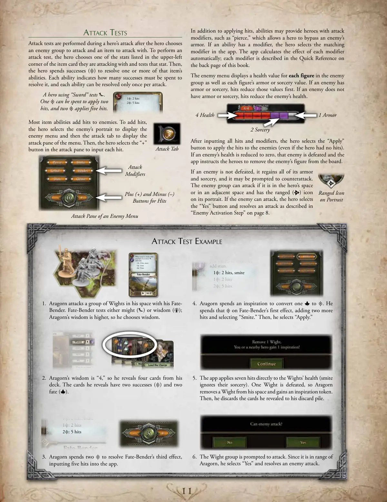
<figcaption>原版规则书 · 第 11 页（点击图片放大）</figcaption>
</figure>

<details class="mt-fold">
<summary>📝 第 11 页 AI 机翻对照（点击展开）</summary>
<div class="mt-body"><p>攻击测试示例</p>

<p>命运扭曲者 (Fate-Bender)</p>

<p>当你拥有3个或更多时用于攻击，添加眩晕。</p>

<p>1: 2次打击，重击</p>

<p>1: 2次打击</p>

<p>2: 5次打击</p>

<p></p>

<p>90 </p>

<p>TM Lic. SZC to FFG</p>

<h3>1.	 Aragorn用他的命运扭曲者(Fate-Bender)攻击他所在空间的一群幽魂(Wights)。命运扭曲者(Fate-Bender)测试力量()或智慧()；Aragorn的智慧更高，所以他选择智慧。</h3>

<ol>
  <li>Aragorn的智慧是"4"，所以他从牌库中翻开四张牌。他翻开的牌中有两张成功()和两张命运()。</li>
  <li>Aragorn花费两张来解析命运扭曲者(Fate-Bender)的第三个效果，在应用中输入五次打击。</li>
  <li>Aragorn花费一个灵感将一张转换为。他将那张用于命运扭曲者(Fate-Bender)的第一个效果，再添加两次打击并选择"重击"。然后，他选择"应用"。</li>
  <li>应用将七次打击直接应用于幽魂(Wights)的生命值(重击忽略他们的巫术)。一个幽魂(Wight)被击败，所以Aragorn从他的空间移除一个幽魂(Wight)并获得一个灵感指示物。然后，他将他翻开的牌弃入弃牌堆。</li>
  <li>幽魂(Wight)组被提示攻击。因为它在Aragorn的范围内，他选择"是"并解析一次敌人攻击。</li>
</ol>

<p>战术</p>

<p>游侠 (Strider)</p>

<p>TM Lic. SZC to FFG</p>

<p>固有 • 勇气 (Valour)</p>

<p>人类的礼物 (Gift of Men)</p>

<p>TM Lic. SZC to FFG</p>

<p>力量</p>

<p>智慧</p>

<p>敏捷</p>

<p>精神</p>

<p>机智</p>

<p>当英雄侦察(durin)和附近的英雄各自获得...</p>

<p>在你的回合开始时，你</p>

<p>装备精良 (Well Provisioned)</p>

<p>TM Lic. SZC to FFG</p>

<p>战术</p>

<p>冲锋带头 (Lead the Charge)</p>

<p>TM Lic. SZC to FFG</p>

<p>命运扭曲者 (Fate-Bender)</p>

<p>1: 2次打击，重击</p>

<p>1: 2次打击</p>

<p>2: 5次打击</p>

<p>1: 2次打击</p>

<p>2: 5次打击</p>

<p>智慧</p>

<p>当你拥有3个或更多时，</p>

<p>添加眩晕。</p>

<p>1: 2次打击，重击</p>

<p>1: 2次打击</p>

<p>2: 5次打击</p>

<p>添加眩晕。</p>

<p>1: 2次打击，重击</p>

<p>1: 2次打击</p>

<p>除了应用打击外，能力可能为英雄提供攻击修饰符，如"穿透"(pierce)，它允许英雄绕过敌人的护甲。如果一个能力有修饰符，英雄在应用中选择匹配的修饰符。应用自动计算每个修饰符的效果；每个修饰符都在本书最后一页的快速参考中描述。</p>

<p>敌人菜单显示敌人组中每个角色的生命值以及每个角色的护甲或巫术值。如果敌人有护甲或巫术，打击首先减少这些值。如果敌人没有护甲或巫术，打击减少敌人的生命值。</p>

<p>在输入所有打击和修饰符后，英雄选择"应用"按钮将打击应用于敌人(即使英雄没有打击)。如果敌人的生命值降至零，该敌人被击败，应用指示英雄从版图上移除敌人的角色。如果敌人未被击败，它会恢复其所有护甲和巫术，并且它可能被提示反击。</p>

<p>如果敌人在英雄的空间或相邻空间中，并且在其肖像上有远程()图标，则敌人组可以攻击。如果敌人可以攻击，英雄选择</p>

<p>"是"按钮，并按照第8页"敌人激活步骤"中描述的方式解决一次攻击。</p>

<p>1 护甲</p>

<p>2 法术</p>

<p>4 生命值</p>

<p>远程图标</p>

<p>在肖像上</p>

<p>攻击测试</p>

<p>攻击测试在英雄选择要攻击的敌人群组和攻击用的物品后，在英雄攻击期间进行。要进行攻击测试，英雄选择他们正在使用的物品卡左上角列出的属性之一，并测试该属性。然后，英雄花费成功点()来解决该物品的一项或多项能力。每项能力都指明了需要花费多少成功点才能解决，并且每项能力在一次攻击中只能解决一次。</p>

<p>大多数物品能力会为敌人增加命中点。要增加命中点，英雄选择敌人的肖像以显示敌人菜单，然后选择攻击标签以显示菜单的攻击面板。然后，英雄在攻击面板中选择"+"按钮来输入每个命中点。</p>

<p>1: 2个命中点</p>

<p>2: 5个命中点</p>

<p>使用"剑"的英雄测试。</p>

<p>一个可以花费以应用两个命中点，两个应用五个命中点。</p>

<p>攻击标签</p>

<p>用于命中点的加号(+)和减号(–)按钮</p>

<p>攻击修正值</p>

<p>敌人菜单的攻击面板</p></div>
</details>

<figure>
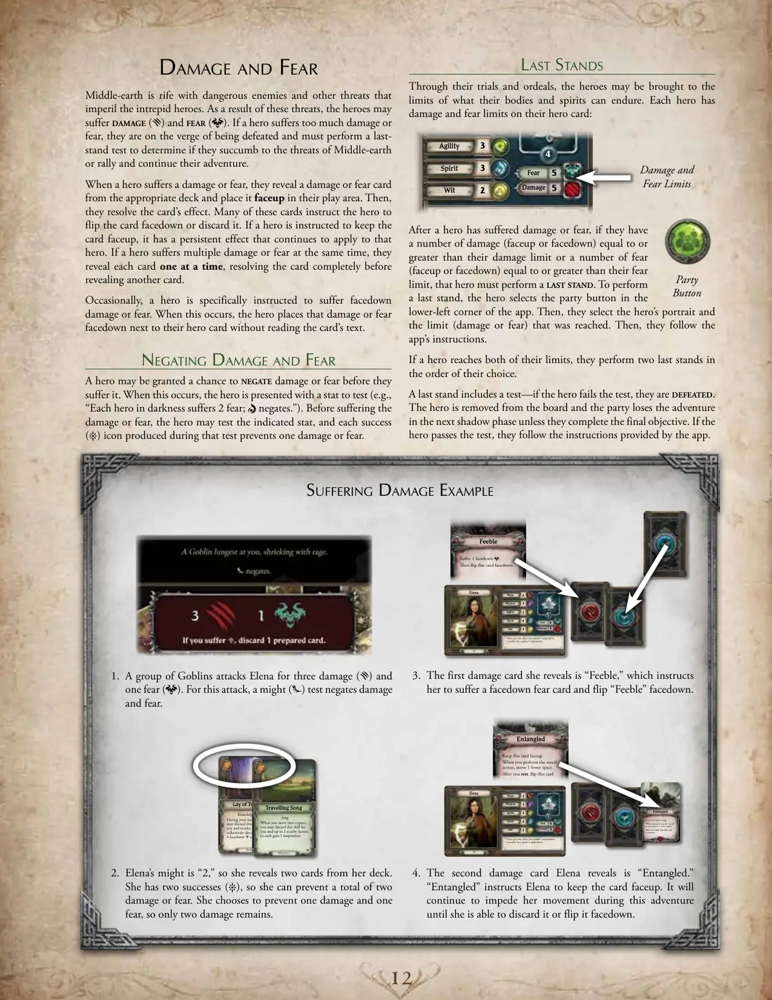
<figcaption>原版规则书 · 第 12 页（点击图片放大）</figcaption>
</figure>

<details class="mt-fold">
<summary>📝 第 12 页 AI 机翻对照（点击展开）</summary>
<div class="mt-body"><p>承受伤害示例</p>

<ol>
  <li>一群哥布林攻击埃琳娜，造成三点伤害（）和一点恐惧（）。这次攻击中，力量（）测试可以抵消伤害和恐惧。</li>
  <li>埃琳娜的力量是"2"，所以她从她的牌库中翻开两张牌。她有两个成功（），所以她总共可以预防两点伤害或恐惧。她选择预防一点伤害和一点恐惧，因此只剩下两点伤害。</li>
  <li>她翻开的第一个伤害牌是"虚弱"，它指示她承受一张面朝下的恐惧牌并将"虚弱"牌面朝下翻转。</li>
  <li>埃琳娜翻开的第二张伤害牌是"纠缠"。"纠缠"指示埃琳娜将这张牌保持面朝上。在这次冒险期间，它将继续阻碍她的移动，直到她能够弃掉它或将它面朝下翻转。</li>
</ol>

<p>埃琳娜 4</p>

<p>知识 • 歌曲</p>

<p>在你的回合，你可以弃掉这项技能，你和附近的英雄可以集体弃掉最多4张面朝下的和。</p>

<p>暮光之歌</p>

<p>TM Lic. SZC to FFG</p>

<p>音乐家 2</p>

<p>歌曲</p>

<p>当你移动到一个区域时，你可以弃掉这项技能，你和最多2名附近的英雄各获得1点灵感。</p>

<p>旅行之歌</p>

<p>TM Lic. SZC to FFG</p>

<p>纠缠</p>

<p>保持这张牌面朝上。</p>

<p>当你执行移动行动时，少移动一个区域。</p>

<p>在你休息后，将这张牌面朝下翻转。</p>

<h2>FFG</h2>

<p>纠缠</p>

<p>保持这张牌面朝上。</p>

<p>当你执行移动行动时，少移动一个区域。</p>

<p>在你休息后，将这张牌面朝下翻转。</p>

<p>TM Lic. SZC to FFG</p>

<p>力量</p>

<p>智慧</p>

<p>敏捷</p>

<p>精神</p>

<p>机智</p>

<p>伤害</p>

<p>恐惧</p>

<p>精灵</p>

<p>埃琳娜</p>

<p>每次测试中，在你花费1点灵感后，一名附近的英雄获得1点灵感。</p>

<p>虚弱</p>

<p>承受1张面朝下的。</p>

<p>然后将这张牌面朝下翻转。</p>

<h2>FFG</h2>

<p>力量</p>

<p>智慧</p>

<p>敏捷</p>

<p>精神</p>

<p>机智</p>

<p>伤害</p>

<p>恐惧</p>

<p>精灵</p>

<p>埃琳娜</p>

<p>每次测试中，在你花费1点灵感后，一名附近的英雄获得1点灵感。</p>

<p>伤害与恐惧</p>

<p>中土世界充满了危险的敌人和其他威胁，危及这些英勇的英雄。由于这些威胁，英雄可能会承受伤害（）和恐惧（）。如果英雄承受了过多的伤害或恐惧，他们濒临被击败，必须进行一次最后抵抗测试，以确定他们是屈服于中土世界的威胁还是重整旗鼓继续他们的冒险。</p>

<p>当英雄承受伤害或恐惧时，他们从相应的牌库中翻开一张伤害或恐惧牌，并将其面朝上放置在自己的游戏区域中。然后，他们解决牌的效果。这些牌中的许多指示英雄将牌面朝下翻转或弃掉。如果英雄被指示将牌保持面朝上，它会产生持续效果，继续应用于该英雄。如果英雄同时承受多点伤害或恐惧，他们一张一张地翻开每张牌，在翻开下一张牌之前完全解决当前牌的效果。</p>

<p>偶尔，英雄会被特别指示承受面朝下的伤害或恐惧。当这种情况发生时，英雄将那张伤害或恐惧牌</p>

<p>面朝下放在他们的英雄卡旁边，不阅读卡牌文本。</p>

<p><strong>抵消伤害和恐惧</strong></p>

<p>英雄可能会在被伤害或恐惧前获得抵消的机会。当这种情况发生时，会向英雄展示一个需要测试的属性（例如，"每个在黑暗中的英雄承受2点恐惧；可抵消"）。在承受伤害或恐惧前，英雄可以测试指定的属性，测试中产生的每个成功（）图标可以防止一点伤害或恐惧。</p>

<p><strong>最后抵抗</strong></p>

<p>通过试炼和磨难，英雄可能会达到他们身体和精神所能承受的极限。每位英雄的英雄卡上都有伤害和恐惧的限制：</p>

<p>当英雄承受伤害或恐惧后，如果他们承受的伤害（面朝上或面朝下）数量等于或大于其伤害限制，或者恐惧（面朝上或面朝下）数量等于或大于其恐惧限制，该英雄必须进行最后抵抗。要进行最后抵抗，英雄选择应用左下角的队伍按钮。然后，他们选择英雄的肖像和达到的限制（伤害或恐惧）。接着，他们按照应用的指示操作。</p>

<p>如果英雄同时达到两个限制，他们可以按自己选择的顺序进行两次最后抵抗。</p>

<p>最后抵抗包括一次测试——如果英雄测试失败，他们被击败。英雄从版图上移除，队伍在下一个阴影阶段失去冒险，除非他们完成最终目标。如果英雄测试成功，他们按照应用的指示操作。</p>

<p>队伍按钮</p>

<p>伤害和恐惧限制</p>

<p>敏捷</p>

<p>精神</p>

<p>智慧</p>

<p>伤害</p>

<p>恐惧</p>

<p>每轮一次，在你冲刺、躲藏或攻击后</p></div>
</details>

<figure>
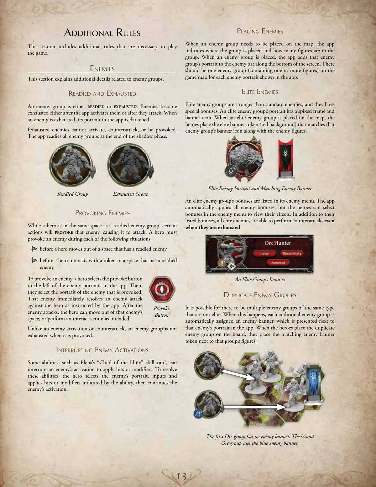
<figcaption>原版规则书 · 第 13 页（点击图片放大）</figcaption>
</figure>

<details class="mt-fold">
<summary>📝 第 13 页 AI 机翻对照（点击展开）</summary>
<div class="mt-body"><p>附加规则</p>

<p>本节包含了玩游戏所需的附加规则。</p>

<p>敌人</p>

<p>本节解释了与敌群相关的附加细节。</p>

<p>准备状态和耗尽状态</p>

<p>一个敌群要么处于准备状态，要么处于耗尽状态。敌人在被应用激活后或攻击后会进入耗尽状态。当敌人处于耗尽状态时，其在应用中的肖像会变暗。</p>

<p>处于耗尽状态的敌人无法激活、反击或被挑衅。</p>

<p>应用在暗影阶段结束时将所有敌群重置为准备状态。</p>

<p>挑衅敌人</p>

<p>当一个英雄与处于准备状态的敌群位于同一格时，某些行动会挑衅该敌人，导致其攻击。英雄在以下每种情况下必须挑衅敌人：</p>

<p></p>

<p> 在英雄移出有准备状态敌人的格子之前</p>

<p></p>

<p> 在英雄与有准备状态敌人的格子中的指示物互动之前</p>

<p>要挑衅敌人，英雄需选择应用中敌人肖像左侧的挑衅按钮。然后，他们选择被挑衅敌人的肖像。</p>

<p>该敌人立即根据应用的指示对英雄执行一次敌人攻击。敌人攻击后，英雄可以移出该敌人的格子，或按计划执行互动行动。</p>

<p>与敌人激活或反击不同，敌群在被挑衅时不会进入耗尽状态。</p>

<p>中断敌人激活</p>

<p>某些能力，例如埃琳娜的"Lhûn之子"技能卡，可以中断敌人的激活以应用命中或修正。要解决这些能力，英雄选择敌人的肖像，输入并应用该能力指示的命中或修正，然后继续敌人的激活。</p>

<p>准备状态群组</p>

<p>耗尽状态群组</p>

<p>挑衅按钮</p>

<p>放置敌人</p>

<p>当需要将敌群放置在地图上时，应用会指示该群组放置的位置以及群组中的单位数量。当敌群被放置时，应用会将该敌群的肖像添加到屏幕底部的敌人栏中。应用中显示的每个敌人肖像都应在游戏地图上对应一个敌群（包含一个或多个单位）。</p>

<p>精英敌人</p>

<p>精英敌群比普通敌人更强，并且有特殊加成。精英敌群的肖像有尖角边框和旗帜图标。当精英敌群被放置在地图上时，英雄会放置与该敌群旗帜图标匹配的精英旗帜指示物（红色背景）以及敌人单位。</p>

<p>精英敌群的加成列在其敌人菜单中。应用会自动应用所有敌人加成，但英雄可以在敌人菜单中选择加成以查看其效果。除了列出的加成外，所有精英敌人在处于耗尽状态时也能够执行反击。</p>

<p>重复敌群</p>

<p>可能出现多个同类型且不是精英的敌军群体。当这种情况发生时，每个额外的敌军群体会自动分配一个敌军旗帜，该旗帜会在应用中显示在该敌军肖像旁边。当英雄们将重复的敌军群体放置到版图上时，他们会将匹配的敌军旗帜指示物放置在该群体的模型旁边。</p>

<p>精英敌军肖像和匹配的敌军旗帜</p>

<p>精英群体的奖励</p>

<p>第一个兽人群体没有敌军旗帜。第二个兽人群体使用蓝色敌军旗帜。</p></div>
</details>

<figure>
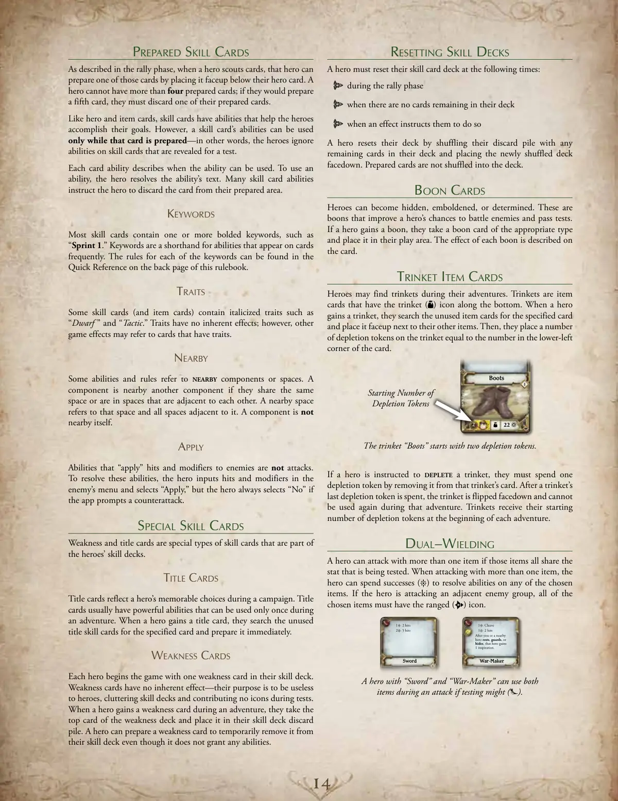
<figcaption>原版规则书 · 第 14 页（点击图片放大）</figcaption>
</figure>

<details class="mt-fold">
<summary>📝 第 14 页 AI 机翻对照（点击展开）</summary>
<div class="mt-body"><p>准备好的技能卡</p>

<p>如集结阶段所述，当英雄侦察卡牌时，该英雄可以通过将其面朝上放置在其英雄卡下方来准备其中一张卡牌。英雄不能拥有超过四张已准备的卡牌；如果他们准备第五张卡牌，必须弃掉一张已准备的卡牌。</p>

<p>与英雄和物品卡牌一样，技能卡牌也有帮助英雄达成目标的能力。然而，技能卡牌的能力只能在卡牌处于准备状态时使用——换句话说，英雄会忽略为测试而展示的技能卡牌上的能力。</p>

<p>每张卡牌能力描述了何时可以使用该能力。要使用能力，英雄需要解析能力的文本。许多技能卡牌能力指示英雄从其准备区域弃掉该卡牌。</p>

<p>关键词</p>

<p>大多数技能卡包含一个或多个加粗的关键词，如"冲刺 1"。关键词是频繁出现在卡牌上的能力的简写形式。每个关键词的规则可以在本规则书背面的快速参考中找到。</p>

<p>特性</p>

<p>一些技能卡（和物品卡）包含斜体的特性，如"矮人"和"战术"。特性本身没有固有效果；然而，其他游戏效果可能会引用具有特性的卡牌。</p>

<p>附近</p>

<p>一些能力和规则指的是附近的组件或区域。如果一个组件与另一个组件位于同一空间，或位于彼此相邻的空间中，则该组件靠近另一个组件。附近的区域指的是该区域及其所有相邻区域。一个组件不靠近自身。</p>

<p>应用</p>

<p>"应用"伤害和修正值给敌人的能力不是攻击。要解析这些能力，英雄在敌人的菜单中输入伤害和修正值并选择"应用"，但如果应用程序提示反击，英雄总是选择"否"。</p>

<p>特殊技能卡</p>

<p>弱点和称号卡是特殊类型的技能卡，是英雄技能牌库的一部分。</p>

<p>称号卡</p>

<p>称号卡反映了英雄在战役中的难忘选择。称号卡通常拥有强大的能力，这些能力只能在冒险中使用一次。当英雄获得一张称号卡时，他们会从未使用的称号技能卡中寻找指定的卡牌并立即准备它。</p>

<p>弱点卡</p>

<p>每个英雄在游戏开始时在其技能牌库中有一张弱点卡。弱点卡没有固有效果——它们的目的对英雄无用，会占用技能牌库的空间，并且在测试中不提供任何图标。当英雄在冒险中获得一张弱点卡时，他们从弱点牌库顶拿取一张卡牌并将其放入其技能牌库弃牌堆。英雄可以准备一张弱点卡以暂时将其从技能牌库中移除，尽管它不提供任何能力。</p>

<p>重置技能牌库</p>

<p>英雄必须在以下时间重置其技能卡牌牌库：</p>

<p></p>

<h2>集结阶段</h2>

<p>当牌库中没有剩余卡牌时</p>

<p>当某个效果指示他们这样做时</p>

<p>英雄通过将弃牌堆与牌库中剩余的牌洗混，并将新洗好的牌面朝下放置来重置其牌库。已准备卡牌不会被洗入牌库。</p>

<p>增益卡牌</p>

<p>英雄可以变得隐匿、勇敢或坚定。这些是能提高英雄战斗敌人和通过测试几率的增益。如果英雄获得增益，他们会获取相应类型的增益卡牌并将其放置在其游戏区域。每种增益的效果描述在卡牌上。</p>

<p>饰品物品卡牌</p>

<p>英雄在冒险过程中可能会找到饰品。饰品是底部带有饰品()图标的物品卡牌。当英雄获得饰品时，他们在未使用的物品卡牌中寻找指定的卡牌，并将其面朝上放置在其他物品旁边。然后，他们在饰品上放置等于卡牌左下角数量的损耗指示物。</p>

<p>如果英雄被指示消耗一个饰品，他们必须通过从该饰品卡牌上移除一个损耗指示物来花费它。当一个饰品的最后一个损耗指示物被花费后，该饰品被翻转为面朝下，并且在此次冒险中无法再次使用。饰品在每次冒险开始时获得其起始数量的损耗指示物。</p>

<p>双持武器</p>

<p>如果多个物品都共享被测试的属性，英雄可以使用多个物品进行攻击。当使用多个物品攻击时，英雄可以花费成功()来解决所选物品上的任何能力。如果英雄正在攻击相邻的敌群，所有所选物品都必须有远程()图标。</p>

<p>饰品"靴子"起始时有2个损耗指示物。</p>

<p>起始损耗指示物数量</p>

<p></p>

<p>22 </p>

<p>靴子</p>

<p>TM Lic. SZC to FFG</p>

<p>1: 横斩</p>

<p>1: 2次伤害</p>

<p>在你或附近英雄休息、警戒或隐藏后，该英雄获得1点灵感。</p>

<p>战争制造者</p>

<p>FG</p>

<p>剑</p>

<p>1: 2次伤害</p>

<p>2: 5次伤害</p>

<p>FG</p>

<p>拥有"剑"和"战争制造者"的英雄如果测试勇气()，可以在攻击时使用这两个物品。</p></div>
</details>

<figure>
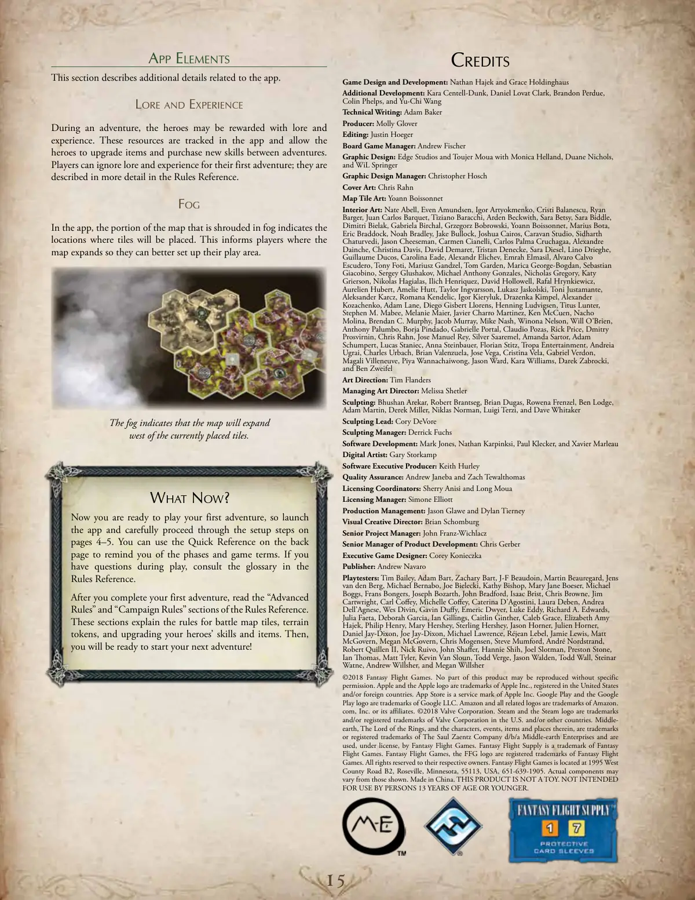
<figcaption>原版规则书 · 第 15 页（点击图片放大）</figcaption>
</figure>

<details class="mt-fold">
<summary>📝 第 15 页 AI 机翻对照（点击展开）</summary>
<div class="mt-body"><p>应用元素</p>

<p>本节描述与应用相关的额外细节。</p>

<p>背景故事与经验值</p>

<p>在冒险过程中，英雄可能会获得背景故事和经验值。这些资源在应用中追踪，并允许英雄在冒险之间升级物品和购买新技能。</p>

<p>玩家可以在第一次冒险时忽略背景故事和经验值；它们在规则参考中有更详细的描述。</p>

<p>迷雾</p>

<p>在应用中，地图上被迷雾笼罩的部分表示将放置板块的位置。这告知玩家地图将扩展的位置，以便他们能更好地设置游戏区域。</p>

<p>迷雾表示地图将在已放置板块的西侧扩展。</p>

<p>制作人员</p>

<p>游戏设计与开发：Nathan Hajek 和 Grace Holdinghaus</p>

<p>额外开发：Kara Centell-Dunk, Daniel Lovat Clark, Brandon Perdue, Colin Phelps, 和 Yu-Chi Wang</p>

<p>技术写作：Adam Baker</p>

<p>制作人：Molly Glover</p>

<p>编辑：Justin Hoeger</p>

<p>桌面游戏经理：Andrew Fischer</p>

<p>平面设计：Edge Studios 和 Toujer Moua 与 Monica Helland, Duane Nichols, 和 WiL Springer</p>

<p>平面设计经理：Christopher Hosch</p>

<p>封面艺术：Chris Rahn</p>

<p>板块艺术：Yoann Boissonnet</p>

<p>内部艺术：Nate Abell, Even Amundsen, Igor Artyokmenko, Cristi Balanescu, Ryan Barger, Juan Carlos Barquet, Tiziano Baracchi, Arden Beckwith, Sara Betsy, Sara Biddle, Dimitri Bielak, Gabriela Birchal, Grzegorz Bobrowski, Yoann Boissonnet, Marius Bota, Eric Braddock, Noah Bradley, Jake Bullock, Joshua Cairos, Caravan Studio, Sidharth Chaturvedi, Jason Cheeseman, Carmen Cianelli, Carlos Palma Cruchagaa, Alexandre Dainche, Christina Davis, David Demaret, Tristan Denecke, Sara Diesel, Lino Drieghe, Guillaume Ducos, Carolina Eade, Alexandr Elichev, Emrah Elmasil, Alvaro Calvo Escudero, Tony Foti, Mariusz Gandzel, Tom Garden, Marica George-Bogdan, Sebastian Giacobino, Sergey Glushakov, Michael Anthony Gonzales, Nicholas Gregory, Katy Grierson, Nikolas Hagialas, Ilich Henriquez, David Hollowell, Rafal Hrynkiewicz, Aurelien Hubert, Amelie Hutt, Taylor Ingvarsson, Lukasz Jaskolski, Toni Justamante, Aleksander Karcz, Romana Kendelic, Igor Kieryluk, Drazenka Kimpel, Alexander Kozachenko, Adam Lane, Diego Gisbert Llorens, Henning Ludvigsen, Titus Lunter, Stephen M. Mabee, Melanie Maier, Javier Charro Martinez, Ken McCuen, Nacho Molina, Brendan C. Murphy, Jacob Murray, Mike Nash, Winona Nelson, Will O'Brien, Anthony Palumbo, Borja Pindado, Gabrielle Portal, Claudio Pozas, Rick Price, Dmitry Prosvirnin, Chris Rahn, Jose Manuel Rey, Silver Saaremel, Amanda Sartor, Adam Schumpert, Lucas Staniec, Anna Steinbauer, Florian Stitz, Tropa Entertainment, Andreia Ugrai, Charles Urbach, Brian Valenzuela, Jose Vega, Cristina Vela, Gabriel Verdon,</p>

<p>Magali Villeneuve, Piya Wannachaiwong, Jason Ward, Kara Williams, Darek Zabrocki,</p>

<p>和 Ben Zweifel</p>

<p>艺术指导：Tim Flanders</p>

<p>美术总监：Melissa Shetler</p>

<p>雕塑：Bhushan Arekar, Robert Brantseg, Brian Dugas, Rowena Frenzel, Ben Lodge,</p>

<p>Adam Martin, Derek Miller, Niklas Norman, Luigi Terzi, 和 Dave Whitaker</p>

<p>雕塑主管：Cory DeVore</p>

<p>雕塑经理：Derrick Fuchs</p>

<p>软件开发：Mark Jones, Nathan Karpinksi, Paul Klecker, 和 Xavier Marleau</p>

<p>数字艺术家：Gary Storkamp</p>

<p>软件执行制片人：Keith Hurley</p>

<p>质量保证：Andrew Janeba 和 Zach Tewalthomas</p>

<p>授权协调员：Sherry Anisi 和 Long Moua</p>

<p>授权经理：Simone Elliott</p>

<p>制作管理：Jason Glawe 和 Dylan Tierney</p>

<p>视觉创意总监：Brian Schomburg</p>

<p>高级项目经理：John Franz-Wichlacz</p>

<p>高级产品开发经理：Chris Gerber</p>

<p>执行游戏设计师：Corey Konieczka</p>

<p>出版商：Andrew Navaro</p>

<p>测试玩家：Tim Bailey, Adam Bart, Zachary Bart, J-F Beaudoin, Martin Beauregard, Jens</p>

<p>van den Berg, Michael Bernabo, Joe Bielecki, Kathy Bishop, Mary Jane Boeser, Michael</p>

<p>Boggs, Frans Bongers, Joseph Bozarth, John Bradford, Isaac Brist, Chris Browne, Jim</p>

<p>Cartwright, Carl Coffey, Michelle Coffey, Caterina D'Agostini, Laura Deben, Andrea</p>

<p>Dell'Agnese, Wes Divin, Gavin Duffy, Emeric Dwyer, Luke Eddy, Richard A. Edwards,</p>

<p>Julia Faeta, Deborah Garcia, Ian Gillings, Caitlin Ginther, Caleb Grace, Elizabeth Amy</p>

<p>Hajek, Philip Henry, Mary Hershey, Sterling Hershey, Jason Horner, Julien Horner,</p>

<p>Daniel Jay-Dixon, Joe Jay-Dixon, Michael Lawrence, Réjean Lebel, Jamie Lewis, Matt</p>

<p>McGovern, Megan McGovern, Chris Mogensen, Steve Mumford, André Nordstrand,</p>

<p>Robert Quillen II, Nick Ruivo, John Shaffer, Hannie Shih, Joel Slotman, Preston Stone,</p>

<p>Ian Thomas, Matt Tyler, Kevin Van Sloun, Todd Verge, Jason Walden, Todd Wall, Steinar</p>

<p>Watne, Andrew Willsher, 和 Megan Willsher</p>

<p>©2018 Fantasy Flight Games. 未经特别许可，不得复制本产品的任何部分。Apple 和 Apple 标志是 Apple Inc. 的商标，在美国和/或其他国家注册。App Store 是 Apple Inc. 的服务标志。Google Play 和 Google Play 标志是 Google LLC 的商标。Amazon 及所有相关标志是 Amazon.com, Inc. 或其附属公司的商标。©2018 Valve Corporation。Steam 和 Steam 标志是 Valve Corporation 在美国和/或其他国家的商标和/或注册商标。中土世界、指环王及其中的角色、事件、物品和地点，是 The Saul Zaentz Company d/b/a Middle-earth Enterprises 的商标或注册商标，并由 Fantasy Flight Games 根据许可使用。Fantasy Flight Supply 是 Fantasy Flight Games 的商标。</p>

<p>飞行游戏。幻想飞行游戏(FFG)及其标志是幻想飞行游戏的注册商标。所有权利归其各自所有者所有。幻想飞行游戏位于美国明尼苏达州罗斯维尔县西县路B2号1995号，邮编55113，电话651-639-1905。实际组件可能与所示有所不同。中国制造。本产品不是玩具。不适用于13岁及以下人士使用。</p>

<p>接下来呢？</p>

<p>现在你已经准备好进行第一次冒险了，所以启动应用程序并仔细按照第4-5页上的设置步骤进行操作。你可以使用最后一页的快速参考来提醒你游戏阶段和术语。如果在游戏过程中有问题，请查阅规则参考中的词汇表。</p>

<p>完成第一次冒险后，请阅读规则参考中的"高级规则"和"战役规则"部分。这些部分解释了战斗板块板块、地形指示物以及升级英雄技能和物品的规则。然后，你就可以准备好开始下一次冒险了！</p></div>
</details>

<figure>
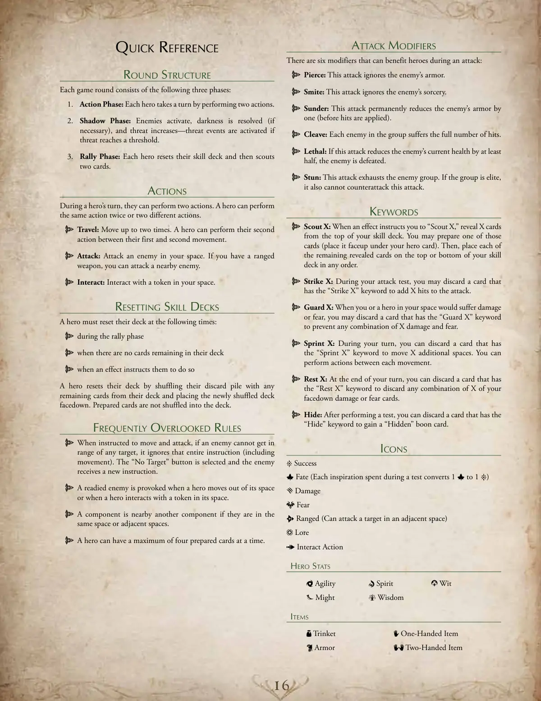
<figcaption>原版规则书 · 第 16 页（点击图片放大）</figcaption>
</figure>

<details class="mt-fold">
<summary>📝 第 16 页 AI 机翻对照（点击展开）</summary>
<div class="mt-body"><p>快速参考</p>

<p>轮次结构</p>

<p>每个游戏轮包含以下三个阶段：</p>

<ol>
  <li>行动阶段：每位英雄通过执行两个行动来进行一个回合。</li>
  <li>暗影阶段：敌人激活，黑暗效果结算（如必要），威胁值增加—如果威胁值达到阈值，则触发威胁事件。</li>
  <li>集结阶段：每位英雄重置其技能牌库，然后侦察两张牌。</li>
</ol>

<p>行动</p>

<p>在英雄的回合中，他们可以执行两个行动。英雄可以执行相同的行动两次，或执行两个不同的行动。</p>

<p></p>

<p> 移动：最多移动两次。英雄可以在第一次和第二次移动之间执行第二个行动。</p>

<p></p>

<p> 攻击：攻击你所在空间中的敌人。如果你拥有远程武器，可以攻击附近的敌人。</p>

<p></p>

<p> 互动：与你所在空间中的指示物互动。</p>

<p>重置技能牌库</p>

<p>英雄必须在以下时间重置其牌库：</p>

<p></p>

<p> 在集结阶段</p>

<p></p>

<p> 当其牌库中没有剩余卡牌时</p>

<p></p>

<p> 当某个效果指示他们这样做时</p>

<p>英雄通过将其弃牌堆与牌库中任何剩余卡牌洗混，并将洗混后的新牌库面朝下放置来重置其牌库。已准备的牌不会被洗入牌库。</p>

<p>经常被忽略的规则</p>

<p></p>

<p> 当被指示移动和攻击时，如果敌人无法进入任何目标的范围内，它将忽略整个指令（包括移动）。选择"无目标"按钮，敌人将获得新的指令。</p>

<p></p>

<p> 当英雄离开其空间或与其空间中的指示物互动时，已就绪的敌人会被挑衅。</p>

<p></p>

<p> 如果两个组件在同一空间或相邻空间中，则它们彼此邻近。</p>

<p></p>

<p> 英雄一次最多可以准备四张牌。</p>

<p>攻击修正</p>

<p>有六种修正可以在攻击中为英雄提供增益：</p>

<p></p>

<p> 穿透：此攻击忽略敌人的护甲。</p>

<p></p>

<p> 惩击：此攻击忽略敌人的魔法。</p>

<p></p>

<p> 破甲：此攻击永久减少敌人一点护甲（在应用伤害之前）。</p>

<p></p>

<p> 连斩：群体中的每个敌人都会承受完整的伤害数。</p>

<p></p>

<p> 致命：如果此攻击减少敌人当前生命值至少一半，敌人被击败。</p>

<p></p>

<p> 眩晕：此攻击使敌人群体疲劳。如果该群体是精英群体，它也无法对此攻击进行反击。</p>

<p>关键词</p>

<p></p>

<p> 侦察X：当某个效果指示你"侦察X"时，从你技能牌库顶部展示X张牌。你可以准备其中一张牌（将其面朝下放在你的英雄卡牌下方）。然后，将剩余的每张展示的牌以任意顺序放在你技能牌库的顶部或底部。</p>

<p></p>

<p> 攻击X：在你的攻击测试中，你可以弃掉一张带有"攻击X"关键词的牌，为攻击增加X点伤害。</p>

<p></p>

<p> 守护X：当你或你所在空间中的英雄将要受到伤害时</p>

<blockquote>
<p>或者恐惧，你可以弃掉一张带有"守卫X"关键词的卡牌来防止任意组合的X点伤害和恐惧。</p>

<p>冲刺X：在你的回合中，你可以弃掉一张带有"冲刺X"关键词的卡牌来额外移动X个格。你可以在每次移动之间执行行动。</p>

<p>休息X：在你的回合结束时，你可以弃掉一张带有"休息X"关键词的卡牌来弃掉任意组合的X张你的面朝下的伤害或恐惧卡牌。</p>

<p>隐藏：执行测试后，你可以弃掉一张带有"隐藏"关键词的卡牌来获得一张"隐藏"增益卡牌。</p>
</blockquote>

<p>图标</p>

<p> 成功</p>

<p> 命运（测试期间每花费1点灵感可将1个转换为1个）</p>

<p> 伤害</p>

<p> 恐惧</p>

<p> 远程（可以攻击相邻格的目标）</p>

<p> 学识</p>

<p> 互动行动</p>

<p>英雄属性</p>

<p> 敏捷</p>

<p> 力量</p>

<p> 精神</p>

<p> 智慧</p>

<p> 机智</p>

<p>物品</p>

<p> 小饰品</p>

<p> 护甲</p>

<p> 单手物品</p>

<p> 双手物品</p></div>
</details>
        </div>

        <footer class="source-note">
<p>来源：<a href="https://cdn.svc.asmodee.net/production-fantasyflightgames/uploads/2026/09/journeys_in_middle-earth_learn_to_play.pdf" target="_blank" rel="noopener">FFG 官方</a>（2019 journeys_in_middle-earth_learn_to_play.pdf）· 译文仅供个人学习查阅，规则内容归 Fantasy Flight Games 及版权方所有 · 原文版權與商标归原出版方。</p>
</footer>
      </article>
    </main>
  </div>

  <button class="to-top" aria-label="返回顶部" data-i18n-aria="backTop">↑</button>
  <script src="../assets/js/i18n.js"></script>
  <script src="../assets/js/main.js"></script>
</body>
</html>
